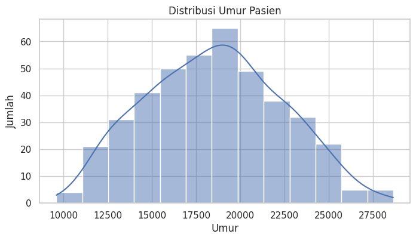
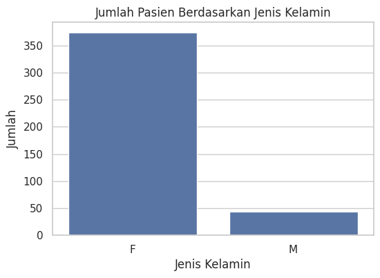
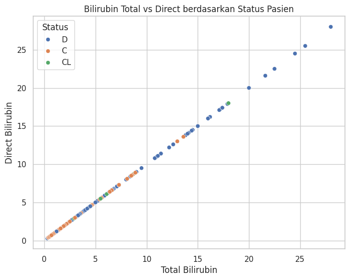
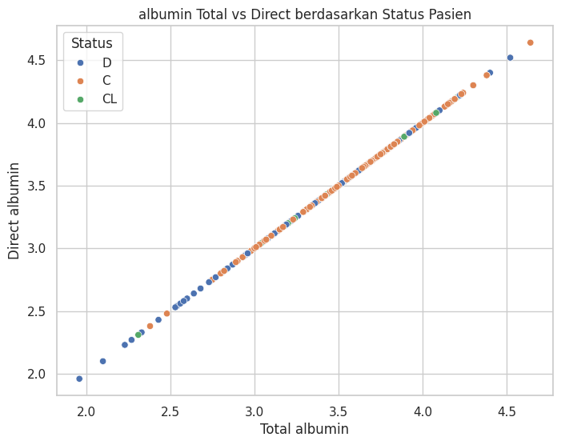
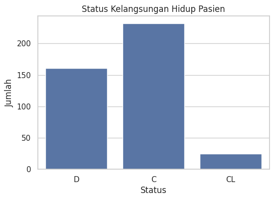
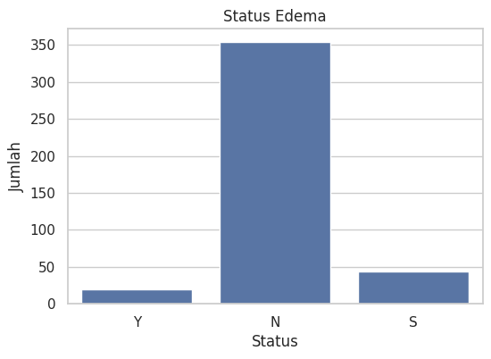
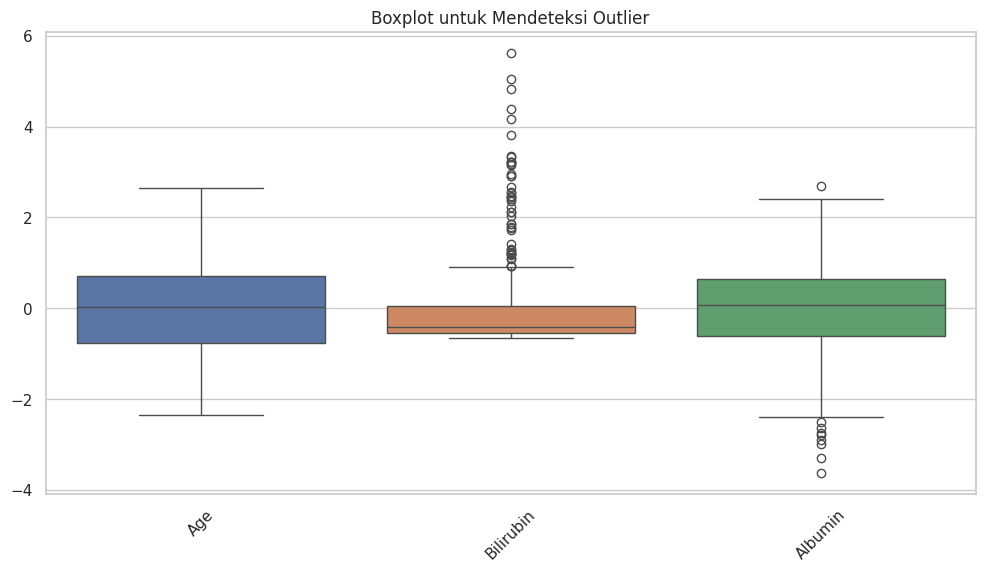

UTS pendat#
Understanding Data#
!pip install ucimlrepo
!pip install sklearn
Collecting ucimlrepo
Downloading ucimlrepo-0.0.7-py3-none-any.whl.metadata (5.5 kB)
Requirement already satisfied: pandas>=1.0.0 in /usr/local/lib/python3.11/dist-packages (from ucimlrepo) (2.2.2)
Requirement already satisfied: certifi>=2020.12.5 in /usr/local/lib/python3.11/dist-packages (from ucimlrepo) (2025.1.31)
Requirement already satisfied: numpy>=1.23.2 in /usr/local/lib/python3.11/dist-packages (from pandas>=1.0.0->ucimlrepo) (2.0.2)
Requirement already satisfied: python-dateutil>=2.8.2 in /usr/local/lib/python3.11/dist-packages (from pandas>=1.0.0->ucimlrepo) (2.8.2)
Requirement already satisfied: pytz>=2020.1 in /usr/local/lib/python3.11/dist-packages (from pandas>=1.0.0->ucimlrepo) (2025.2)
Requirement already satisfied: tzdata>=2022.7 in /usr/local/lib/python3.11/dist-packages (from pandas>=1.0.0->ucimlrepo) (2025.2)
Requirement already satisfied: six>=1.5 in /usr/local/lib/python3.11/dist-packages (from python-dateutil>=2.8.2->pandas>=1.0.0->ucimlrepo) (1.17.0)
Downloading ucimlrepo-0.0.7-py3-none-any.whl (8.0 kB)
Installing collected packages: ucimlrepo
Successfully installed ucimlrepo-0.0.7
Collecting sklearn
Downloading sklearn-0.0.post12.tar.gz (2.6 kB)
error: subprocess-exited-with-error
× python setup.py egg_info did not run successfully.
│ exit code: 1
╰─> See above for output.
note: This error originates from a subprocess, and is likely not a problem with pip.
Preparing metadata (setup.py) ... ?25l?25herror
error: metadata-generation-failed
× Encountered error while generating package metadata.
╰─> See above for output.
note: This is an issue with the package mentioned above, not pip.
hint: See above for details.
from ucimlrepo import fetch_ucirepo
# fetch dataset
cirrhosis_patient_survival_prediction = fetch_ucirepo(id=878)
# data (as pandas dataframes)
X = cirrhosis_patient_survival_prediction.data.features
y = cirrhosis_patient_survival_prediction.data.targets
# metadata
print(cirrhosis_patient_survival_prediction.metadata)
# variable information
print(cirrhosis_patient_survival_prediction.variables)
{'uci_id': 878, 'name': 'Cirrhosis Patient Survival Prediction', 'repository_url': 'https://archive.ics.uci.edu/dataset/878/cirrhosis+patient+survival+prediction+dataset-1', 'data_url': 'https://archive.ics.uci.edu/static/public/878/data.csv', 'abstract': 'Utilize 17 clinical features for predicting survival state of patients with liver cirrhosis. The survival states include 0 = D (death), 1 = C (censored), 2 = CL (censored due to liver transplantation).', 'area': 'Health and Medicine', 'tasks': ['Classification'], 'characteristics': ['Tabular'], 'num_instances': 418, 'num_features': 17, 'feature_types': ['Real', 'Categorical'], 'demographics': ['Age', 'Sex'], 'target_col': ['Status'], 'index_col': ['ID'], 'has_missing_values': 'yes', 'missing_values_symbol': 'NaN', 'year_of_dataset_creation': 1989, 'last_updated': 'Fri Nov 03 2023', 'dataset_doi': '10.24432/C5R02G', 'creators': ['E. Dickson', 'P. Grambsch', 'T. Fleming', 'L. Fisher', 'A. Langworthy'], 'intro_paper': {'ID': 296, 'type': 'NATIVE', 'title': 'Prognosis in primary biliary cirrhosis: Model for decision making', 'authors': 'E. Dickson, P. Grambsch, T. Fleming, L. Fisher, A. Langworthy', 'venue': 'Hepatology', 'year': 1989, 'journal': None, 'DOI': None, 'URL': 'https://www.semanticscholar.org/paper/db1487216b8a4b26f5e5078ea9109ac9d8355b65', 'sha': None, 'corpus': None, 'arxiv': None, 'mag': None, 'acl': None, 'pmid': None, 'pmcid': None}, 'additional_info': {'summary': "During 1974 to 1984, 424 PBC patients referred to the Mayo Clinic qualified for the randomized placebo-controlled trial testing the drug D-penicillamine. Of these, the initial 312 patients took part in the trial and have mostly comprehensive data. The remaining 112 patients didn't join the clinical trial but agreed to record basic metrics and undergo survival tracking. Six of these patients were soon untraceable after their diagnosis, leaving data for 106 of these individuals in addition to the 312 who were part of the randomized trial.", 'purpose': 'Cirrhosis results from prolonged liver damage, leading to extensive scarring, often due to conditions like hepatitis or chronic alcohol consumption. The data provided is sourced from a Mayo Clinic study on primary biliary cirrhosis (PBC) of the liver carried out from 1974 to 1984.', 'funded_by': 'Mayo Clinic', 'instances_represent': 'People', 'recommended_data_splits': None, 'sensitive_data': 'Gender, Age', 'preprocessing_description': '1. Drop all the rows where miss value (NA) were present in the Drug column\n2. Impute missing values with mean results\n3. One-hot encoding for all category attributes', 'variable_info': '1. ID: unique identifier\n2. N_Days: number of days between registration and the earlier of death, transplantation, or study analysis time in July 1986\n3. Status: status of the patient C (censored), CL (censored due to liver tx), or D (death)\n4. Drug: type of drug D-penicillamine or placebo\n5. Age: age in [days]\n6. Sex: M (male) or F (female)\n7. Ascites: presence of ascites N (No) or Y (Yes)\n8. Hepatomegaly: presence of hepatomegaly N (No) or Y (Yes)\n9. Spiders: presence of spiders N (No) or Y (Yes)\n10. Edema: presence of edema N (no edema and no diuretic therapy for edema), S (edema present without diuretics, or edema resolved by diuretics), or Y (edema despite diuretic therapy)\n11. Bilirubin: serum bilirubin in [mg/dl]\n12. Cholesterol: serum cholesterol in [mg/dl]\n13. Albumin: albumin in [gm/dl]\n14. Copper: urine copper in [ug/day]\n15. Alk_Phos: alkaline phosphatase in [U/liter]\n16. SGOT: SGOT in [U/ml]\n17. Triglycerides: triglicerides in [mg/dl]\n18. Platelets: platelets per cubic [ml/1000]\n19. Prothrombin: prothrombin time in seconds [s]\n20. Stage: histologic stage of disease (1, 2, 3, or 4)\n', 'citation': 'Fleming, Thomas R., and David P. Harrington. Counting processes and survival analysis. Vol. 625. John Wiley & Sons, 2013.'}}
name role type demographic \
0 ID ID Integer None
1 N_Days Other Integer None
2 Status Target Categorical None
3 Drug Feature Categorical None
4 Age Feature Integer Age
5 Sex Feature Categorical Sex
6 Ascites Feature Categorical None
7 Hepatomegaly Feature Categorical None
8 Spiders Feature Categorical None
9 Edema Feature Categorical None
10 Bilirubin Feature Continuous None
11 Cholesterol Feature Integer None
12 Albumin Feature Continuous None
13 Copper Feature Integer None
14 Alk_Phos Feature Continuous None
15 SGOT Feature Continuous None
16 Tryglicerides Feature Integer None
17 Platelets Feature Integer None
18 Prothrombin Feature Continuous None
19 Stage Feature Categorical None
description units missing_values
0 unique identifier None no
1 number of days between registration and the ea... None no
2 status of the patient C (censored), CL (censor... None no
3 type of drug D-penicillamine or placebo None yes
4 age days no
5 M (male) or F (female) None no
6 presence of ascites N (No) or Y (Yes) None yes
7 presence of hepatomegaly N (No) or Y (Yes) None yes
8 presence of spiders N (No) or Y (Yes) None yes
9 presence of edema N (no edema and no diuretic ... None no
10 serum bilirubin mg/dl no
11 serum cholesterol mg/dl yes
12 albumin gm/dl no
13 urine copper ug/day yes
14 alkaline phosphatase U/liter yes
15 SGOT U/ml yes
16 tryglicerides None yes
17 platelets per cubic ml/1000 yes
18 prothrombin time s yes
19 histologic stage of disease (1, 2, 3, or 4) None yes
from ucimlrepo import fetch_ucirepo
import pandas as pd
# Ambil dataset
cirrhosis_patient_survival_prediction = fetch_ucirepo(id=878)
# Ambil fitur dan target
X = cirrhosis_patient_survival_prediction.data.features
y = cirrhosis_patient_survival_prediction.data.targets
# Gabungkan semua ke dalam satu DataFrame
df = pd.concat([X, y], axis=1)
# Tampilkan semua data
print(df.to_string())
Drug Age Sex Ascites Hepatomegaly Spiders Edema Bilirubin Cholesterol Albumin Copper Alk_Phos SGOT Tryglicerides Platelets Prothrombin Stage Status
0 D-penicillamine 21464 F Y Y Y Y 14.5 261 2.60 156 1718.0 137.95 172 190 12.2 4.0 D
1 D-penicillamine 20617 F N Y Y N 1.1 302 4.14 54 7394.8 113.52 88 221 10.6 3.0 C
2 D-penicillamine 25594 M N N N S 1.4 176 3.48 210 516.0 96.10 55 151 12.0 4.0 D
3 D-penicillamine 19994 F N Y Y S 1.8 244 2.54 64 6121.8 60.63 92 183 10.3 4.0 D
4 Placebo 13918 F N Y Y N 3.4 279 3.53 143 671.0 113.15 72 136 10.9 3.0 CL
5 Placebo 24201 F N Y N N 0.8 248 3.98 50 944.0 93.00 63 NaNN 11.0 3.0 D
6 Placebo 20284 F N Y N N 1.0 322 4.09 52 824.0 60.45 213 204 9.7 3.0 C
7 Placebo 19379 F N N N N 0.3 280 4.00 52 4651.2 28.38 189 373 11.0 3.0 D
8 D-penicillamine 15526 F N N Y N 3.2 562 3.08 79 2276.0 144.15 88 251 11.0 2.0 D
9 Placebo 25772 F Y N Y Y 12.6 200 2.74 140 918.0 147.25 143 302 11.5 4.0 D
10 Placebo 19619 F N Y Y N 1.4 259 4.16 46 1104.0 79.05 79 258 12.0 4.0 D
11 Placebo 21600 F N N Y N 3.6 236 3.52 94 591.0 82.15 95 71 13.6 4.0 D
12 Placebo 16688 F N N N N 0.7 281 3.85 40 1181.0 88.35 130 244 10.6 3.0 C
13 Placebo 20535 M Y Y N Y 0.8 NaNN 2.27 43 728.0 71.00 NaNN 156 11.0 4.0 D
14 D-penicillamine 23612 F N N N N 0.8 231 3.87 173 9009.8 127.71 96 295 11.0 3.0 D
15 Placebo 14772 F N N N N 0.7 204 3.66 28 685.0 72.85 58 198 10.8 3.0 C
16 Placebo 19060 F N Y N N 2.7 274 3.15 159 1533.0 117.80 128 224 10.5 4.0 D
17 D-penicillamine 19698 F N Y Y Y 11.4 178 2.80 588 961.0 280.55 200 283 12.4 4.0 D
18 D-penicillamine 18102 F N Y N S 0.7 235 3.56 39 1881.0 93.00 123 209 11.0 3.0 C
19 Placebo 21898 F N Y N N 5.1 374 3.51 140 1919.0 122.45 135 322 13.0 4.0 D
20 Placebo 23445 M N Y Y N 0.6 252 3.83 41 843.0 65.10 83 336 11.4 4.0 C
21 D-penicillamine 20555 F N N Y N 3.4 271 3.63 464 1376.0 120.90 55 173 11.6 4.0 D
22 Placebo 20442 F Y Y Y Y 17.4 395 2.94 558 6064.8 227.04 191 214 11.7 4.0 D
23 D-penicillamine 16261 M N Y N N 2.1 456 4.00 124 5719.0 221.88 230 70 9.9 2.0 D
24 Placebo 16463 F N N N N 0.7 298 4.10 40 661.0 106.95 66 324 11.3 2.0 C
25 Placebo 19002 F N Y Y N 5.2 1128 3.68 53 3228.0 165.85 166 421 9.9 3.0 D
26 Placebo 19884 F Y Y Y S 21.6 175 3.31 221 3697.4 101.91 168 80 12.0 4.0 D
27 Placebo 16417 F Y Y Y Y 17.2 222 3.23 209 1975.0 189.10 195 144 13.0 4.0 D
28 Placebo 23331 F N N N N 0.7 370 3.78 24 5833.0 73.53 86 390 10.6 2.0 C
29 Placebo 15116 F N Y Y N 3.6 260 2.54 172 7277.0 121.26 158 124 11.0 4.0 D
30 Placebo 15177 F N Y N N 4.7 296 3.44 114 9933.2 206.40 101 195 10.3 2.0 D
31 Placebo 19722 F N Y N N 1.8 262 3.34 101 7277.0 82.56 158 286 10.6 4.0 C
32 Placebo 18731 F N N N N 0.8 210 3.19 82 1592.0 218.55 113 180 12.0 3.0 D
33 D-penicillamine 19015 F N N N N 0.8 364 3.70 37 1840.0 170.50 64 273 10.5 2.0 C
34 Placebo 17758 F N N N N 1.2 314 3.20 201 12258.8 72.24 151 431 10.6 3.0 D
35 Placebo 20604 F N N N N 0.3 172 3.39 18 558.0 71.30 96 311 10.6 2.0 C
36 D-penicillamine 22546 F Y Y N Y 7.1 334 3.01 150 6931.2 180.60 118 102 12.0 4.0 D
37 Placebo 13378 F N Y Y N 3.3 383 3.53 102 1234.0 137.95 87 234 11.0 4.0 D
38 D-penicillamine 20232 F N Y N N 0.7 282 3.00 52 9066.8 72.24 111 563 10.6 4.0 D
39 D-penicillamine 17046 F N N N N 1.3 NaNN 3.34 105 11046.6 104.49 NaNN 358 11.0 4.0 C
40 D-penicillamine 12285 F N Y N N 6.8 NaNN 3.26 96 1215.0 151.90 NaNN 226 11.7 4.0 D
41 Placebo 12307 F N Y Y N 2.1 NaNN 3.54 122 8778.0 56.76 NaNN 344 11.0 4.0 C
42 D-penicillamine 17850 F N N N N 1.1 361 3.64 36 5430.2 67.08 89 203 10.6 2.0 C
43 Placebo 13727 F N Y Y Y 3.3 299 3.55 131 1029.0 119.35 50 199 11.7 3.0 D
44 Placebo 15265 F N N N N 0.6 NaNN 3.93 19 1826.0 71.30 NaNN 474 10.9 2.0 C
45 D-penicillamine 16728 F N Y N N 5.7 482 2.84 161 11552.0 136.74 165 518 12.7 3.0 D
46 Placebo 17323 F N N N N 0.5 316 3.65 68 1716.0 187.55 71 356 9.8 3.0 C
47 Placebo 17947 M N N N N 1.9 259 3.70 281 10396.8 188.34 178 214 11.0 3.0 C
48 Placebo 22336 F N Y N N 0.8 NaNN 3.82 58 678.0 97.65 NaNN 233 11.0 4.0 D
49 D-penicillamine 19544 F N Y N N 1.1 257 3.36 43 1080.0 106.95 73 128 10.6 4.0 D
50 Placebo 19025 F N N N N 0.8 276 3.60 54 4332.0 99.33 143 273 10.6 2.0 D
51 D-penicillamine 18460 M N N N N 6.0 614 3.70 158 5084.4 206.40 93 362 10.6 1.0 D
52 D-penicillamine 24621 F N Y N N 2.6 NaNN 3.10 94 6456.2 56.76 NaNN 214 11.0 4.0 D
53 D-penicillamine 14317 F Y Y Y Y 1.3 288 3.40 262 5487.2 73.53 125 254 11.0 4.0 D
54 D-penicillamine 24020 M N N N N 1.8 416 3.94 121 10165.0 79.98 219 213 11.0 3.0 D
55 Placebo 12279 F N Y Y N 1.1 498 3.80 88 13862.4 95.46 319 365 10.6 2.0 D
56 D-penicillamine 19567 F N Y N S 2.3 260 3.18 231 11320.2 105.78 94 216 12.4 3.0 D
57 D-penicillamine 16279 M N N N N 0.7 242 4.08 73 5890.0 56.76 118 NaNN 10.6 1.0 C
58 D-penicillamine 14754 F N Y Y N 0.8 329 3.50 49 7622.8 126.42 124 321 10.6 3.0 D
59 D-penicillamine 21324 F N N N N 0.9 604 3.40 82 876.0 71.30 58 228 10.3 3.0 C
60 Placebo 16034 M N N N N 0.6 216 3.94 28 601.0 60.45 188 211 13.0 1.0 C
61 Placebo 22173 F Y N N N 1.3 302 2.75 58 1523.0 43.40 112 329 13.2 4.0 D
62 Placebo 17031 F N N Y Y 22.5 932 3.12 95 5396.0 244.90 133 165 11.6 3.0 D
63 Placebo 22977 F N Y N N 2.1 373 3.50 52 1009.0 150.35 188 178 11.0 3.0 D
64 D-penicillamine 14684 F N N N N 1.2 256 3.60 74 724.0 141.05 108 430 10.0 1.0 C
65 D-penicillamine 16967 M N Y N N 1.4 427 3.70 105 1909.0 182.90 171 123 11.0 3.0 D
66 Placebo 18733 F N N N N 1.1 466 3.91 84 1787.0 328.60 185 261 10.0 3.0 D
67 D-penicillamine 11912 F N N N N 0.7 174 4.09 58 642.0 71.30 46 203 10.6 3.0 C
68 D-penicillamine 18021 F N Y Y S 20.0 652 3.46 159 3292.0 215.45 184 227 12.4 3.0 D
69 D-penicillamine 20600 F N N N N 0.6 NaNN 4.64 20 666.0 54.25 NaNN 265 10.6 2.0 C
70 Placebo 17841 F N Y N N 1.2 258 3.57 79 2201.0 120.90 76 410 11.5 4.0 C
71 Placebo 11868 F N N N N 0.5 320 3.54 51 1243.0 122.45 80 225 10.0 3.0 C
72 Placebo 14060 F N N N N 0.7 132 3.60 17 423.0 49.60 56 265 11.0 1.0 C
73 D-penicillamine 18964 F N Y Y N 8.4 558 3.99 280 967.0 89.90 309 278 11.0 4.0 D
74 D-penicillamine 15895 F Y Y Y S 17.1 674 2.53 207 2078.0 182.90 598 268 11.5 4.0 D
75 D-penicillamine 18972 F N Y Y S 12.2 394 3.08 111 2132.0 155.00 243 165 11.6 4.0 D
76 Placebo 18199 F N Y Y S 6.6 244 3.41 199 1819.0 170.50 91 132 12.1 3.0 D
77 D-penicillamine 17512 F N Y N N 6.3 436 3.02 75 2176.0 170.50 104 236 10.6 4.0 D
78 D-penicillamine 16990 F N Y N N 0.8 315 4.24 13 1637.0 170.50 70 426 10.9 3.0 C
79 Placebo 24622 M N Y N N 7.2 247 3.72 269 1303.0 176.70 91 360 11.2 4.0 D
80 D-penicillamine 23107 F N Y Y N 14.4 448 3.65 34 1218.0 60.45 318 385 11.7 4.0 D
81 D-penicillamine 24585 F N N N N 4.5 472 4.09 154 1580.0 117.80 272 412 11.1 3.0 D
82 D-penicillamine 20459 F N Y N S 1.3 250 3.50 48 1138.0 71.30 100 81 12.9 4.0 C
83 Placebo 20392 F N N N N 0.4 263 3.76 29 1345.0 137.95 74 181 11.2 3.0 C
84 Placebo 17246 F N Y N N 2.1 262 3.48 58 2045.0 89.90 84 225 11.5 4.0 D
85 D-penicillamine 19270 F N Y Y N 5.0 1600 3.21 75 2656.0 82.15 174 181 10.9 3.0 D
86 D-penicillamine 13616 F N N N N 1.1 345 4.40 75 1860.0 218.55 72 447 10.7 3.0 D
87 Placebo 15119 F N N N S 0.6 296 4.06 37 1032.0 80.60 83 442 12.0 3.0 C
88 D-penicillamine 19155 F N Y N N 2.0 408 3.65 50 1083.0 110.05 98 200 11.4 2.0 D
89 D-penicillamine 12227 M N N N N 1.6 660 4.22 94 1857.0 151.90 155 337 11.0 2.0 D
90 Placebo 16658 F N Y Y S 5.0 325 3.47 110 2460.0 246.45 56 430 11.9 4.0 D
91 D-penicillamine 28018 F Y N N Y 1.4 206 3.13 36 1626.0 86.80 70 145 12.2 4.0 D
92 D-penicillamine 13344 F N N N N 1.3 353 3.67 73 2039.0 232.50 68 380 11.1 2.0 C
93 D-penicillamine 19693 F N Y Y N 3.2 201 3.11 178 1212.0 159.65 69 188 11.8 4.0 D
94 Placebo 16944 F Y Y Y Y 17.4 NaNN 2.64 182 559.0 119.35 NaNN 401 11.7 2.0 D
95 D-penicillamine 17841 F N N N N 1.0 NaNN 3.70 33 1258.0 99.20 NaNN 338 10.4 3.0 C
96 Placebo 26259 M N Y N S 2.0 420 3.26 62 3196.0 77.50 91 344 11.4 3.0 D
97 D-penicillamine 10550 F N N N N 1.0 239 3.77 77 1877.0 97.65 101 312 10.2 1.0 C
98 Placebo 17703 M N N N N 1.8 460 3.35 148 1472.0 108.50 118 172 10.2 2.0 C
99 Placebo 18799 M N Y N N 2.3 178 3.00 145 746.0 178.25 122 119 12.0 4.0 D
100 Placebo 16418 F N N N N 0.9 400 3.60 31 1689.0 164.30 166 327 10.4 3.0 C
101 D-penicillamine 20662 F N N N N 0.9 248 3.97 172 646.0 62.00 84 128 10.1 1.0 C
102 Placebo 17884 F Y Y Y Y 2.5 188 3.67 57 1273.0 119.35 102 110 11.1 4.0 D
103 D-penicillamine 15712 F N N N N 1.1 303 3.64 20 2108.0 128.65 53 349 11.1 2.0 D
104 Placebo 12433 F N Y N N 1.1 464 4.20 38 1644.0 151.90 102 348 10.3 3.0 CL
105 D-penicillamine 25023 F Y Y N N 2.1 NaNN 3.90 50 1087.0 103.85 NaNN 137 10.6 2.0 D
106 Placebo 22836 F N N N N 0.6 212 4.03 10 648.0 71.30 77 316 17.1 1.0 C
107 D-penicillamine 18393 F N N N N 0.4 127 3.50 14 1062.0 49.60 84 334 10.3 2.0 D
108 Placebo 16094 F N N N N 0.5 120 3.61 53 804.0 110.05 52 271 10.6 3.0 C
109 D-penicillamine 14212 F N Y Y N 1.9 486 3.54 74 1052.0 108.50 109 141 10.9 3.0 D
110 D-penicillamine 15031 F N N N N 5.5 528 4.18 77 2404.0 172.05 78 467 10.7 3.0 CL
111 Placebo 20256 F N Y Y N 2.0 267 3.67 89 754.0 196.85 90 136 11.8 4.0 D
112 D-penicillamine 18713 F N Y Y N 6.7 374 3.74 103 979.0 128.65 100 266 11.1 4.0 D
113 Placebo 19295 M N N N N 3.2 259 4.30 208 1040.0 110.05 78 268 11.7 3.0 D
114 Placebo 15574 F N N Y N 0.7 303 4.19 81 1584.0 111.60 156 307 10.3 3.0 C
115 D-penicillamine 22306 F N N Y S 3.0 458 3.63 74 1588.0 106.95 382 438 9.9 3.0 C
116 D-penicillamine 18137 F N Y Y N 6.5 950 3.11 111 2374.0 170.50 149 354 11.0 4.0 D
117 D-penicillamine 17844 F N Y N N 3.5 390 3.30 67 878.0 137.95 93 207 10.2 3.0 D
118 D-penicillamine 19817 F N N Y N 0.6 636 3.83 129 944.0 97.65 114 306 9.5 3.0 D
119 D-penicillamine 12839 M N N N N 3.5 325 3.98 444 766.0 130.20 210 344 10.6 3.0 CL
120 Placebo 24803 M Y Y N Y 1.3 151 3.08 73 1112.0 46.50 49 213 13.2 4.0 D
121 D-penicillamine 20248 F N N N N 0.6 298 4.13 29 758.0 65.10 85 256 10.7 3.0 C
122 D-penicillamine 16736 F N Y Y Y 5.1 NaNN 3.23 18 790.0 179.80 NaNN 104 13.0 4.0 D
123 D-penicillamine 19318 M N Y N N 0.6 251 3.90 25 681.0 57.35 107 182 10.8 4.0 C
124 Placebo 17233 F N Y N N 1.3 316 3.51 75 1162.0 147.25 137 238 10.0 4.0 CL
125 D-penicillamine 19577 F Y Y Y N 1.2 269 3.12 NaNN 1441.0 165.85 68 166 11.1 4.0 D
126 Placebo 16109 F N N N N 0.5 268 4.08 9 1174.0 86.80 95 453 10.0 2.0 C
127 D-penicillamine 15322 F N Y Y N 16.2 NaNN 2.89 42 1828.0 299.15 NaNN 123 12.6 4.0 D
128 D-penicillamine 23235 F N Y N N 0.9 420 3.87 30 1009.0 57.35 232 NaNN 9.7 3.0 C
129 Placebo 16154 F N Y Y N 17.4 1775 3.43 205 2065.0 165.85 97 418 11.5 3.0 D
130 Placebo 22646 F N Y Y N 2.8 242 3.80 74 614.0 136.40 104 121 13.2 4.0 D
131 D-penicillamine 14812 F N N N N 1.9 448 3.83 60 1052.0 127.10 175 181 9.8 3.0 C
132 Placebo 22881 M N N N N 1.5 331 3.95 13 577.0 128.65 99 165 10.1 4.0 D
133 Placebo 15463 F N N N N 0.7 578 3.67 35 1353.0 127.10 105 427 10.7 2.0 C
134 D-penicillamine 15694 F N N N N 0.4 263 3.57 123 836.0 74.40 121 445 11.0 2.0 C
135 D-penicillamine 20440 F N N N N 0.8 263 3.35 27 1636.0 116.25 69 206 9.8 2.0 C
136 D-penicillamine 22960 F N N N N 1.1 399 3.60 79 3472.0 155.00 152 344 10.1 2.0 C
137 D-penicillamine 18719 M N Y N N 7.3 426 3.93 262 2424.0 145.70 218 252 10.5 3.0 D
138 Placebo 17080 F N Y N N 1.1 328 3.31 159 1260.0 94.55 134 142 11.6 4.0 C
139 D-penicillamine 19751 F N Y N N 1.1 290 4.09 38 2120.0 186.00 146 318 10.0 3.0 C
140 D-penicillamine 17180 F N N N N 0.9 346 3.77 59 794.0 125.55 56 336 10.6 2.0 C
141 Placebo 20354 F N Y N N 1.0 364 3.48 20 720.0 134.85 88 283 9.9 2.0 D
142 Placebo 16839 F N Y N N 2.9 332 3.60 86 1492.0 134.85 103 277 11.0 4.0 D
143 Placebo 19098 F N Y N S 28.0 556 3.26 152 3896.0 198.40 171 335 10.0 3.0 D
144 Placebo 18701 F N N Y N 0.7 309 3.84 96 858.0 41.85 106 253 11.4 3.0 C
145 Placebo 12369 F N N N S 1.2 NaNN 3.89 58 1284.0 173.60 NaNN 239 9.4 3.0 C
146 D-penicillamine 27398 F N N N S 1.2 288 3.37 32 791.0 57.35 114 213 10.7 2.0 C
147 Placebo 11273 F N Y N N 7.2 1015 3.26 247 3836.0 198.40 280 330 9.8 3.0 D
148 D-penicillamine 22574 M N Y Y S 3.0 257 3.79 290 1664.0 102.30 112 140 9.9 4.0 D
149 Placebo 12779 F N N Y N 1.0 NaNN 3.63 57 1536.0 134.85 NaNN 233 10.0 1.0 C
150 D-penicillamine 20104 F N N N N 0.9 460 3.03 57 721.0 85.25 174 301 9.4 2.0 C
151 D-penicillamine 25546 M N Y N N 2.3 586 3.01 243 2276.0 114.70 126 339 10.9 3.0 D
152 D-penicillamine 18118 F N N N N 0.5 217 3.85 68 453.0 54.25 68 270 11.1 1.0 C
153 D-penicillamine 25340 M N N Y Y 2.4 168 2.56 225 1056.0 120.90 75 108 14.1 3.0 D
154 Placebo 15909 F N Y Y S 0.6 220 3.35 57 1620.0 153.45 80 311 11.2 4.0 C
155 Placebo 21699 F N Y N N 25.5 358 3.52 219 2468.0 201.50 205 151 11.5 2.0 D
156 Placebo 17809 F N N N N 0.6 286 3.42 34 1868.0 77.50 206 487 10.0 2.0 C
157 D-penicillamine 13329 F N N N N 3.4 450 3.37 32 1408.0 116.25 118 313 11.2 2.0 CL
158 Placebo 16714 M N N N N 2.5 317 3.46 217 714.0 130.20 140 207 10.1 3.0 D
159 Placebo 20955 F N N N N 0.6 217 3.62 13 414.0 75.95 119 224 10.5 3.0 C
160 Placebo 15612 F N N N N 2.3 502 3.56 4 964.0 120.90 180 269 9.6 2.0 C
161 Placebo 21483 F N Y Y N 3.2 260 3.19 91 815.0 127.10 101 160 12.0 4.0 D
162 D-penicillamine 19540 F N N N N 0.3 233 4.08 20 622.0 66.65 68 358 9.9 3.0 D
163 Placebo 15857 F N Y Y S 8.5 NaNN 3.34 161 1428.0 181.35 NaNN 88 13.3 4.0 D
164 D-penicillamine 19470 M N Y N N 4.0 196 3.45 80 2496.0 133.30 142 212 11.3 4.0 D
165 Placebo 15105 F N Y N N 5.7 1480 3.26 84 1960.0 457.25 108 213 9.5 2.0 C
166 D-penicillamine 22265 M N Y N N 0.9 376 3.86 200 1015.0 83.70 154 238 10.3 4.0 D
167 Placebo 17442 F N Y N N 0.4 257 3.80 44 842.0 97.65 110 NaNN 9.2 2.0 C
168 Placebo 12963 F N N N N 1.3 408 4.22 67 1387.0 142.60 137 295 10.1 3.0 D
169 D-penicillamine 17774 F N N N N 1.2 390 3.61 32 1509.0 88.35 52 263 9.0 3.0 C
170 D-penicillamine 19237 F N N N N 0.5 NaNN 4.52 31 784.0 74.40 NaNN 361 10.1 3.0 C
171 Placebo 18215 F N N Y N 1.3 205 3.34 65 1031.0 91.45 126 217 9.8 3.0 C
172 D-penicillamine 11058 F N Y Y N 3.0 236 3.42 76 1403.0 89.90 86 493 9.8 2.0 C
173 D-penicillamine 20296 F N N N N 0.5 NaNN 3.85 63 663.0 79.05 NaNN 311 9.7 1.0 C
174 Placebo 19049 F N N N N 0.8 283 3.80 152 718.0 108.50 168 340 10.1 3.0 C
175 D-penicillamine 15198 F N Y Y N 3.2 NaNN 3.56 77 1790.0 139.50 NaNN 149 10.1 4.0 D
176 Placebo 20254 F N N N N 0.9 258 4.01 49 559.0 43.40 133 277 10.4 2.0 C
177 D-penicillamine 25569 F N N N N 0.6 NaNN 4.08 51 665.0 74.40 NaNN 325 10.2 4.0 C
178 Placebo 16050 F N Y N N 1.8 396 3.83 39 2148.0 102.30 133 278 9.9 4.0 C
179 Placebo 15548 F N N N N 4.7 478 4.38 44 1629.0 237.15 76 175 10.4 3.0 C
180 D-penicillamine 16279 F N Y Y N 1.4 248 3.58 63 554.0 75.95 106 79 10.3 4.0 C
181 D-penicillamine 20799 F N Y N N 0.6 NaNN 3.69 161 674.0 26.35 NaNN 539 9.9 2.0 C
182 Placebo 14705 F N N N N 0.5 201 3.73 44 1345.0 54.25 145 445 10.1 2.0 CL
183 Placebo 13736 F N Y N N 11.0 674 3.55 358 2412.0 167.40 140 471 9.8 3.0 D
184 D-penicillamine 17664 F N N N N 0.8 256 3.54 42 1132.0 74.40 94 192 10.5 3.0 C
185 D-penicillamine 25873 F N N Y S 2.0 225 3.53 51 933.0 69.75 62 200 12.7 3.0 D
186 Placebo 13073 F N Y N N 14.0 808 3.43 251 2870.0 153.45 137 268 11.5 3.0 D
187 D-penicillamine 22873 F N Y N N 0.7 187 3.48 41 654.0 120.90 98 164 11.0 4.0 C
188 Placebo 18499 F N Y N N 1.3 360 3.63 52 1812.0 97.65 164 256 9.9 3.0 C
189 D-penicillamine 19916 F N N Y N 2.3 NaNN 3.93 24 1828.0 133.30 NaNN 327 10.2 2.0 C
190 Placebo 19246 F Y Y Y N 24.5 1092 3.35 233 3740.0 147.25 432 399 15.2 4.0 D
191 D-penicillamine 19256 F N Y N N 0.9 308 3.69 67 696.0 51.15 101 344 9.8 4.0 C
192 Placebo 20736 F N N N N 10.8 932 3.19 267 2184.0 161.20 157 382 10.4 4.0 D
193 D-penicillamine 16216 F N N N N 1.5 293 4.30 50 975.0 125.55 56 336 9.1 2.0 C
194 D-penicillamine 10795 F N Y N N 3.7 347 3.90 76 2544.0 221.65 90 129 11.5 4.0 C
195 D-penicillamine 20834 F N Y Y N 1.4 226 3.36 13 810.0 72.85 62 117 11.6 4.0 C
196 D-penicillamine 16300 F N N N N 0.6 266 3.97 25 1164.0 102.30 102 201 10.1 2.0 C
197 Placebo 13075 F N N Y N 0.7 286 2.90 38 1692.0 141.05 90 381 9.6 2.0 C
198 D-penicillamine 14872 F N N N N 2.1 392 3.43 52 1395.0 184.45 194 328 10.2 3.0 C
199 Placebo 11773 F N N Y N 4.7 236 3.55 112 1391.0 137.95 114 332 9.9 3.0 C
200 Placebo 15009 F N Y N N 0.6 235 3.20 26 1758.0 106.95 67 228 10.8 4.0 C
201 D-penicillamine 22514 F N N N N 0.5 223 3.80 15 1044.0 80.60 89 514 10.0 2.0 C
202 Placebo 13535 F N Y N N 0.5 149 4.04 227 598.0 52.70 57 166 9.9 2.0 C
203 Placebo 22857 F N N N N 0.7 255 3.74 23 1024.0 77.50 58 281 10.2 3.0 D
204 D-penicillamine 17889 F Y N N N 2.5 382 3.55 108 1516.0 238.70 NaNN 126 10.3 3.0 D
205 D-penicillamine 22642 F N N N N 0.6 213 4.07 12 5300.0 57.35 68 240 11.0 1.0 C
206 D-penicillamine 26580 F N N N S 0.6 NaNN 3.33 14 733.0 85.25 NaNN 259 10.1 4.0 C
207 D-penicillamine 22388 F N Y N N 3.9 396 3.20 58 1440.0 153.45 131 156 10.0 4.0 D
208 Placebo 19221 F N Y Y N 0.7 252 4.01 11 1210.0 72.85 58 309 9.5 2.0 C
209 Placebo 18176 M N Y N N 0.9 346 3.37 81 1098.0 122.45 90 298 10.0 2.0 C
210 Placebo 19327 F N N N N 1.3 NaNN 3.76 27 1282.0 100.75 NaNN 114 10.3 3.0 C
211 Placebo 17263 F N N N N 1.2 232 3.98 11 1074.0 100.75 99 223 9.9 3.0 C
212 D-penicillamine 18337 F N N Y N 0.5 400 3.40 9 1134.0 96.10 55 356 10.2 3.0 C
213 Placebo 25329 F N Y N N 0.9 404 3.43 34 1866.0 79.05 224 236 9.9 3.0 D
214 Placebo 15037 F N N N N 5.9 1276 3.85 141 1204.0 203.05 157 216 10.7 3.0 D
215 D-penicillamine 21610 F N N N N 0.5 NaNN 3.68 20 856.0 55.80 NaNN 146 10.4 3.0 C
216 Placebo 13178 F N Y N N 11.4 608 3.31 65 1790.0 151.90 210 298 10.8 4.0 D
217 D-penicillamine 12636 F N N N N 0.5 NaNN 3.89 29 897.0 66.65 NaNN 423 10.1 1.0 C
218 Placebo 15601 F N N N N 1.6 215 4.17 67 936.0 134.85 85 176 9.6 3.0 C
219 D-penicillamine 23241 F N N Y N 3.8 426 3.22 96 2716.0 210.80 113 228 10.6 2.0 D
220 Placebo 20684 F N Y N N 0.9 360 3.65 72 3186.0 94.55 154 269 9.7 4.0 C
221 Placebo 16898 F N Y N N 4.5 372 3.38 227 2310.0 167.40 135 240 12.4 3.0 D
222 D-penicillamine 22369 F Y Y N Y 14.1 448 2.43 123 1833.0 134.00 155 210 11.0 4.0 D
223 D-penicillamine 14106 F N N N N 1.0 309 3.66 67 1214.0 158.10 101 309 9.7 3.0 C
224 D-penicillamine 14161 F N N N N 0.7 274 3.66 108 1065.0 88.35 135 251 10.1 2.0 C
225 Placebo 20708 F N Y N N 0.5 223 3.70 39 884.0 75.95 104 231 9.6 3.0 C
226 D-penicillamine 21532 M N N N N 2.3 316 3.35 172 1601.0 179.80 63 394 9.7 2.0 D
227 Placebo 13486 F N N N N 0.7 215 3.35 41 645.0 93.00 74 165 9.6 3.0 C
228 D-penicillamine 22797 F Y Y N S 4.5 191 3.05 200 1020.0 175.15 118 139 11.4 4.0 D
229 Placebo 12641 F N Y Y N 3.3 302 3.41 51 310.0 83.70 44 95 11.5 4.0 C
230 Placebo 21307 F N Y Y N 3.4 518 1.96 115 2250.0 203.05 90 190 10.7 4.0 D
231 D-penicillamine 18329 F N Y N N 0.4 267 3.02 47 1001.0 133.30 87 265 10.6 3.0 C
232 D-penicillamine 15591 F N Y Y N 0.9 514 3.06 412 2622.0 105.40 87 284 9.8 4.0 C
233 Placebo 12557 F N N N N 0.9 578 3.35 78 976.0 116.25 177 322 11.2 2.0 C
234 Placebo 12120 F N Y N N 13.0 1336 4.16 71 3510.0 209.25 111 338 11.9 3.0 C
235 D-penicillamine 14019 F N Y Y N 1.5 253 3.79 67 1006.0 139.50 106 341 9.7 3.0 C
236 D-penicillamine 21828 F N Y N N 1.6 442 2.95 105 820.0 85.25 108 181 10.1 3.0 C
237 Placebo 24257 F N N N S 0.6 280 3.35 NaNN 1093.0 128.65 81 295 9.8 2.0 C
238 D-penicillamine 17090 F N Y Y N 0.8 300 2.94 231 1794.0 130.20 99 319 11.2 4.0 D
239 D-penicillamine 20483 F N N N N 0.4 232 3.72 24 369.0 51.15 139 326 10.1 3.0 C
240 Placebo 15112 F N Y Y N 4.4 316 3.62 308 1119.0 114.70 322 282 9.8 4.0 CL
241 D-penicillamine 23585 F N Y N N 1.9 354 2.97 86 1553.0 196.85 152 277 9.9 3.0 C
242 Placebo 24650 F N Y N N 8.0 468 2.81 139 2009.0 198.40 139 233 10.0 4.0 D
243 D-penicillamine 16374 F N N Y N 3.9 350 3.22 121 1268.0 272.80 231 270 9.6 3.0 D
244 Placebo 16718 F N Y N N 0.6 273 3.65 48 794.0 52.70 214 305 9.6 3.0 C
245 D-penicillamine 12035 F N Y N N 2.1 387 3.77 63 1613.0 150.35 33 185 10.1 4.0 CL
246 D-penicillamine 15056 F N Y N N 6.1 1712 2.83 89 3681.0 158.10 139 297 10.0 3.0 CL
247 Placebo 20241 F N Y N N 0.8 324 3.51 39 1237.0 66.65 146 371 10.0 3.0 C
248 D-penicillamine 17525 F N N Y N 1.3 242 3.20 35 1556.0 175.15 71 195 10.6 4.0 C
249 Placebo 14899 F N Y N N 0.6 299 3.36 23 2769.0 220.10 85 303 10.9 4.0 C
250 D-penicillamine 20810 F N N N N 0.5 227 3.61 40 676.0 83.00 120 249 9.9 2.0 C
251 D-penicillamine 25006 F N Y Y N 1.1 246 3.35 116 924.0 113.15 90 317 10.0 4.0 C
252 D-penicillamine 28650 M Y Y Y N 7.1 243 3.03 380 983.0 158.10 154 97 11.2 4.0 C
253 D-penicillamine 14558 F N Y Y N 3.1 227 3.75 121 1136.0 110.00 91 264 10.0 3.0 CL
254 Placebo 12897 F N Y Y N 0.7 193 3.85 35 466.0 53.00 118 156 10.3 3.0 C
255 D-penicillamine 11485 F N N N N 1.1 336 3.74 48 823.0 84.00 108 242 9.7 3.0 C
256 D-penicillamine 21281 F N N N N 0.5 280 4.23 36 377.0 56.00 146 227 10.6 2.0 C
257 D-penicillamine 18806 F N N N N 1.1 414 3.44 80 1003.0 99.00 55 271 9.6 1.0 C
258 Placebo 21904 F N Y N N 3.1 277 2.97 42 1110.0 125.00 126 221 9.8 3.0 C
259 Placebo 27220 M N Y N N 5.6 232 3.59 188 1120.0 98.00 128 248 10.9 4.0 C
260 Placebo 19126 F N Y Y N 3.2 375 3.14 129 857.0 89.00 NaNN 375 9.5 3.0 C
261 Placebo 15628 F N Y N N 2.8 322 3.06 65 2562.0 91.00 209 231 9.5 3.0 C
262 Placebo 12738 F N Y Y S 1.1 432 3.57 45 1406.0 190.00 77 248 11.4 4.0 CL
263 Placebo 16122 F N Y Y N 3.4 356 3.12 188 1911.0 92.00 130 318 11.2 3.0 CL
264 Placebo 16941 F N Y N N 3.5 348 3.20 121 938.0 120.00 146 296 10.0 4.0 CL
265 D-penicillamine 20567 F N N N N 0.5 318 3.32 52 613.0 70.00 260 279 10.2 3.0 C
266 D-penicillamine 25899 F Y Y Y Y 6.6 222 2.33 138 620.0 106.00 91 195 12.1 4.0 D
267 D-penicillamine 20233 F Y Y N S 6.4 344 2.75 16 834.0 82.00 179 149 11.0 4.0 D
268 Placebo 16467 F N N N N 3.6 374 3.50 143 1428.0 188.00 44 151 10.1 2.0 C
269 D-penicillamine 9598 F N Y Y N 1.0 448 3.74 102 1128.0 71.00 117 228 10.2 3.0 C
270 Placebo 18435 F N Y N N 1.0 321 3.50 94 955.0 111.00 177 289 9.7 3.0 C
271 D-penicillamine 14025 F N N N N 0.5 226 2.93 22 674.0 58.00 85 153 9.8 1.0 C
272 Placebo 17320 F N N Y N 2.2 328 3.46 75 1677.0 87.00 116 202 9.6 3.0 C
273 D-penicillamine 17525 F N N N N 1.6 NaNN 3.07 136 1995.0 128.00 NaNN 372 9.6 4.0 CL
274 D-penicillamine 13995 F N N N N 2.2 572 3.77 77 2520.0 92.00 114 309 9.5 4.0 C
275 D-penicillamine 18302 F N N N N 1.0 219 3.85 67 640.0 145.00 108 95 10.7 2.0 C
276 Placebo 12816 F N N N S 1.0 317 3.56 44 1636.0 84.00 111 394 9.8 3.0 C
277 Placebo 11872 F N N N N 5.6 338 3.70 130 2139.0 185.00 193 215 9.9 4.0 C
278 Placebo 20510 F N N N N 0.5 198 3.77 38 911.0 57.00 56 280 9.8 2.0 C
279 D-penicillamine 16858 F N N N N 1.6 325 3.69 69 2583.0 142.00 140 284 9.6 3.0 C
280 D-penicillamine 24064 F Y N N Y 17.9 175 2.10 220 705.0 338.00 229 62 12.9 4.0 D
281 Placebo 12398 F N Y N N 1.3 304 3.52 97 1622.0 71.00 169 255 9.5 4.0 C
282 Placebo 22960 F N N N N 1.1 412 3.99 103 1293.0 91.00 113 422 9.6 4.0 C
283 Placebo 17738 F N N N N 1.3 291 3.44 75 1082.0 85.00 195 251 9.5 3.0 C
284 D-penicillamine 16929 F N N N N 0.8 253 3.48 65 688.0 57.00 80 252 10.0 1.0 C
285 D-penicillamine 14191 F N Y Y N 2.0 310 3.36 70 1257.0 122.00 118 143 9.8 3.0 C
286 D-penicillamine 21421 F N N Y N 6.4 373 3.46 155 1768.0 120.00 151 258 10.1 4.0 C
287 Placebo 17874 F N Y N S 8.7 310 3.89 107 637.0 117.00 242 298 9.6 2.0 CL
288 D-penicillamine 24681 M N Y N S 4.0 416 3.99 177 960.0 86.00 242 269 9.8 2.0 D
289 D-penicillamine 24101 F N N N N 1.4 294 3.57 33 722.0 93.00 69 283 9.8 3.0 C
290 D-penicillamine 14939 F N N N N 3.2 339 3.18 123 3336.0 205.00 84 304 9.9 4.0 CL
291 Placebo 18352 M N Y N N 8.6 546 3.73 84 1070.0 127.00 153 291 11.2 3.0 C
292 Placebo 20891 F N Y Y Y 8.5 194 2.98 196 815.0 163.00 78 122 12.3 4.0 C
293 D-penicillamine 22111 M N Y N N 6.6 1000 3.07 88 3150.0 193.00 133 299 10.9 4.0 C
294 D-penicillamine 12912 M N N N N 2.4 646 3.83 102 855.0 127.00 194 306 10.3 3.0 CL
295 Placebo 11462 F N N N N 0.8 328 3.31 62 1105.0 137.00 95 293 10.9 4.0 C
296 D-penicillamine 20449 M N Y N N 1.2 275 3.43 100 1142.0 75.00 91 217 11.3 4.0 CL
297 Placebo 19258 F N Y N N 1.1 340 3.37 73 289.0 97.00 93 243 10.2 3.0 C
298 D-penicillamine 13913 F N N N N 2.4 342 3.76 90 1653.0 150.00 127 213 10.8 3.0 C
299 Placebo 21247 F N Y N N 5.2 NaNN 2.23 234 601.0 135.00 NaNN 206 12.3 4.0 D
300 Placebo 16513 F N N N N 1.0 393 3.57 50 1307.0 74.00 103 295 10.5 4.0 C
301 D-penicillamine 13806 F N N N N 0.7 335 3.95 43 657.0 52.00 104 268 10.6 2.0 C
302 Placebo 22156 F N Y Y N 1.0 372 3.25 108 1190.0 140.00 55 248 10.6 4.0 C
303 D-penicillamine 12979 F N N N N 0.5 219 3.93 22 663.0 45.00 75 246 10.8 3.0 C
304 Placebo 15730 F N Y Y N 2.9 426 3.61 73 5184.0 288.00 144 275 10.6 3.0 C
305 Placebo 20597 F N Y N N 0.6 239 3.45 31 1072.0 55.00 64 227 10.7 2.0 C
306 Placebo 11167 F N N N N 0.8 273 3.56 52 1282.0 130.00 59 344 10.5 2.0 C
307 D-penicillamine 22347 F N Y N N 0.4 246 3.58 24 797.0 91.00 113 288 10.4 2.0 C
308 Placebo 21294 F N N N N 0.4 260 2.75 41 1166.0 70.00 82 231 10.8 2.0 C
309 D-penicillamine 22767 F N N N N 1.7 434 3.35 39 1713.0 171.00 100 234 10.2 2.0 C
310 D-penicillamine 13879 F N N N N 2.0 247 3.16 69 1050.0 117.00 88 335 10.5 2.0 C
311 Placebo 12109 F N N Y N 6.4 576 3.79 186 2115.0 136.00 149 200 10.8 2.0 C
312 NaNN 21915 F NaNN NaNN NaNN N 0.7 NaN 3.65 NaN NaN NaN NaN 378 11.0 NaN C
313 NaN 23741 F NaN NaN NaN S 1.4 NaN 3.04 NaN NaN NaN NaN 331 12.1 4.0 D
314 NaN 19724 F NaN NaN NaN N 0.7 NaN 4.03 NaN NaN NaN NaN 226 9.8 4.0 C
315 NaN 27394 F NaN NaN NaN S 0.7 NaN 3.96 NaN NaN NaN NaN NaN 11.3 4.0 D
316 NaN 22646 F NaN NaN NaN N 0.8 NaN 2.48 NaN NaN NaN NaN 273 10.0 NaN C
317 NaN 15706 F NaN NaN NaN N 0.7 NaN 3.68 NaN NaN NaN NaN 306 9.5 2.0 C
318 NaN 16802 F NaN NaN NaN N 5.0 NaN 2.93 NaN NaN NaN NaN 260 10.4 NaN D
319 NaN 16071 F NaN NaN NaN S 0.4 NaN 3.81 NaN NaN NaN NaN 226 10.5 3.0 C
320 NaN 22280 M NaN NaN NaN S 1.3 NaN 3.41 NaN NaN NaN NaN 259 10.9 4.0 C
321 NaN 23376 F NaN NaN NaN N 1.1 NaN 3.69 NaN NaN NaN NaN 139 10.5 NaN D
322 NaN 14610 F NaN NaN NaN N 0.6 NaN 4.04 NaN NaN NaN NaN 130 11.2 2.0 C
323 NaN 23011 F NaN NaN NaN N 0.6 NaN 3.94 NaN NaN NaN NaN 234 11.5 2.0 C
324 NaN 12419 F NaN NaN NaN N 1.8 NaN 3.24 NaN NaN NaN NaN NaN 18.0 2.0 C
325 NaN 18993 F NaN NaN NaN N 1.5 NaN 3.42 NaN NaN NaN NaN 246 10.3 3.0 C
326 NaN 17897 F NaN NaN NaN N 1.2 NaN 3.99 NaN NaN NaN NaN NaN 11.2 2.0 C
327 NaN 19724 F NaN NaN NaN N 1.0 NaN 3.60 NaN NaN NaN NaN NaN 12.1 2.0 D
328 NaN 23011 F NaN NaN NaN N 0.7 NaN 3.40 NaN NaN NaN NaN 371 10.1 4.0 D
329 NaN 19724 M NaN NaN NaN N 3.5 NaN 3.63 NaN NaN NaN NaN 325 10.3 2.0 D
330 NaN 16802 F NaN NaN NaN S 3.1 NaN 3.56 NaN NaN NaN NaN 142 13.6 4.0 D
331 NaN 19358 F NaN NaN NaN N 12.6 NaN 2.87 NaN NaN NaN NaN 114 11.8 4.0 D
332 NaN 20454 F NaN NaN NaN N 2.8 NaN 3.92 NaN NaN NaN NaN NaN 10.6 4.0 D
333 NaN 20454 F NaN NaN NaN N 7.1 NaN 3.51 NaN NaN NaN NaN 721 11.8 NaN D
334 NaN 20089 F NaN NaN NaN N 0.6 NaN 4.15 NaN NaN NaN NaN 280 10.1 2.0 C
335 NaN 23741 F NaN NaN NaN N 2.1 NaN 3.34 NaN NaN NaN NaN 155 10.1 4.0 C
336 NaN 20454 F NaN NaN NaN N 1.8 NaN 3.64 NaN NaN NaN NaN 141 10.0 NaN D
337 NaN 17167 F NaN NaN NaN N 16.0 NaN 3.42 NaN NaN NaN NaN 475 13.8 2.0 D
338 NaN 21915 F NaN NaN NaN N 0.6 NaN 4.38 NaN NaN NaN NaN 269 10.6 2.0 C
339 NaN 19358 F NaN NaN NaN N 5.4 NaN 4.19 NaN NaN NaN NaN 141 11.2 2.0 C
340 NaN 19724 F NaN NaN NaN N 9.0 NaN 3.29 NaN NaN NaN NaN 286 13.1 4.0 D
341 NaN 18263 F NaN NaN NaN N 0.9 NaN 4.01 NaN NaN NaN NaN 244 10.5 3.0 C
342 NaN 17532 F NaN NaN NaN N 11.1 NaN 2.84 NaN NaN NaN NaN NaN 12.2 2.0 D
343 NaN 13149 F NaN NaN NaN N 8.9 NaN 3.76 NaN NaN NaN NaN 209 10.6 3.0 C
344 NaN 17532 F NaN NaN NaN N 0.5 NaN 3.76 NaN NaN NaN NaN 388 10.1 2.0 CL
345 NaN 25568 F NaN NaN NaN S 0.6 NaN 3.81 NaN NaN NaN NaN 160 11.0 4.0 D
346 NaN 18628 F NaN NaN NaN N 3.4 NaN 3.92 NaN NaN NaN NaN NaN 9.3 2.0 D
347 NaN 18993 M NaN NaN NaN N 0.9 NaN 3.14 NaN NaN NaN NaN 191 12.3 2.0 C
348 NaN 19724 F NaN NaN NaN N 1.4 NaN 3.82 NaN NaN NaN NaN 249 10.3 2.0 C
349 NaN 17532 F NaN NaN NaN N 2.1 NaN 4.10 NaN NaN NaN NaN 200 9.0 3.0 D
350 NaN 24107 F NaN NaN NaN N 15.0 NaN 3.40 NaN NaN NaN NaN 150 11.1 4.0 D
351 NaN 19358 F NaN NaN NaN N 0.6 NaN 4.19 NaN NaN NaN NaN 330 9.9 1.0 C
352 NaN 22646 F NaN NaN NaN N 1.3 NaN 3.40 NaN NaN NaN NaN 167 10.6 4.0 C
353 NaN 21550 F NaN NaN NaN N 1.3 NaN 3.12 NaN NaN NaN NaN 125 9.6 2.0 D
354 NaN 14245 F NaN NaN NaN N 1.6 NaN 3.75 NaN NaN NaN NaN 145 10.4 3.0 C
355 NaN 24472 F NaN NaN NaN S 2.2 NaN 3.26 NaN NaN NaN NaN 171 11.1 4.0 D
356 NaN 21185 F NaN NaN NaN N 3.0 NaN 3.46 NaN NaN NaN NaN 109 10.4 4.0 C
357 NaN 23376 F NaN NaN NaN N 0.8 NaN 3.49 NaN NaN NaN NaN 314 10.3 3.0 C
358 NaN 16802 F NaN NaN NaN N 0.8 NaN 2.89 NaN NaN NaN NaN 419 NaN 1.0 C
359 NaN 23376 F NaN NaN NaN N 1.8 NaN 3.15 NaN NaN NaN NaN 183 10.4 4.0 D
360 NaN 14975 F NaN NaN NaN N 5.5 NaN 2.31 NaN NaN NaN NaN 517 10.4 4.0 CL
361 NaN 17897 F NaN NaN NaN N 18.0 NaN 3.04 NaN NaN NaN NaN 432 9.7 2.0 CL
362 NaN 16071 F NaN NaN NaN N 0.6 NaN 3.50 NaN NaN NaN NaN 150 9.9 3.0 C
363 NaN 21550 F NaN NaN NaN N 2.7 NaN 3.35 NaN NaN NaN NaN 142 11.5 4.0 D
364 NaN 23011 F NaN NaN NaN N 0.9 NaN 3.58 NaN NaN NaN NaN 224 10.0 3.0 C
365 NaN 22280 F NaN NaN NaN N 1.3 NaN 3.01 NaN NaN NaN NaN 223 10.7 3.0 D
366 NaN 23376 F NaN NaN NaN N 1.1 NaN 3.49 NaN NaN NaN NaN 166 9.8 3.0 C
367 NaN 17897 F NaN NaN NaN N 13.8 NaN 2.77 NaN NaN NaN NaN 388 NaN 4.0 D
368 NaN 15341 F NaN NaN NaN N 4.4 NaN 4.52 NaN NaN NaN NaN 102 10.8 4.0 D
369 NaN 18263 F NaN NaN NaN N 16.0 NaN 3.36 NaN NaN NaN NaN 384 10.0 3.0 D
370 NaN 18628 F NaN NaN NaN S 7.3 NaN 3.52 NaN NaN NaN NaN 265 11.1 1.0 D
371 NaN 13514 F NaN NaN NaN N 0.6 NaN 3.55 NaN NaN NaN NaN 248 10.3 2.0 C
372 NaN 22646 F NaN NaN NaN N 0.7 NaN 3.29 NaN NaN NaN NaN 190 9.8 2.0 C
373 NaN 18628 F NaN NaN NaN N 0.7 NaN 3.10 NaN NaN NaN NaN 274 10.6 3.0 C
374 NaN 18993 F NaN NaN NaN N 1.7 NaN 3.24 NaN NaN NaN NaN 231 10.5 3.0 CL
375 NaN 16071 M NaN NaN NaN N 9.5 NaN 3.63 NaN NaN NaN NaN 292 10.2 3.0 D
376 NaN 12053 F NaN NaN NaN N 2.2 NaN 3.76 NaN NaN NaN NaN 253 9.9 3.0 C
377 NaN 21915 F NaN NaN NaN S 1.8 NaN 3.62 NaN NaN NaN NaN 225 9.9 2.0 D
378 NaN 23011 F NaN NaN NaN S 3.3 NaN 2.73 NaN NaN NaN NaN 224 11.1 4.0 D
379 NaN 12053 F NaN NaN NaN N 2.9 NaN 4.08 NaN NaN NaN NaN 418 10.5 3.0 CL
380 NaN 14975 M NaN NaN NaN N 1.7 NaN 3.66 NaN NaN NaN NaN 92 11.0 4.0 C
381 NaN 18628 F NaN NaN NaN N 14.0 NaN 2.58 NaN NaN NaN NaN 190 11.6 4.0 D
382 NaN 13514 F NaN NaN NaN S 0.8 NaN 3.00 NaN NaN NaN NaN 76 10.8 4.0 CL
383 NaN 21550 F NaN NaN NaN N 1.3 NaN 3.40 NaN NaN NaN NaN 243 9.7 1.0 C
384 NaN 20089 F NaN NaN NaN N 0.7 NaN 2.93 NaN NaN NaN NaN 209 10.6 3.0 C
385 NaN 19724 M NaN NaN NaN N 1.7 NaN 2.38 NaN NaN NaN NaN 166 9.8 3.0 C
386 NaN 17897 F NaN NaN NaN S 13.6 NaN 3.00 NaN NaN NaN NaN 233 9.9 3.0 C
387 NaN 14610 F NaN NaN NaN N 0.9 NaN 3.50 NaN NaN NaN NaN 117 10.9 4.0 C
388 NaN 24472 F NaN NaN NaN N 0.7 NaN 3.06 NaN NaN NaN NaN 165 10.0 4.0 C
389 NaN 24837 M NaN NaN NaN N 3.0 NaN 3.15 NaN NaN NaN NaN 139 10.0 3.0 C
390 NaN 14975 F NaN NaN NaN N 1.2 NaN 2.80 NaN NaN NaN NaN 120 11.0 2.0 C
391 NaN 25202 F NaN NaN NaN N 0.4 NaN 3.03 NaN NaN NaN NaN 173 10.9 3.0 C
392 NaN 18993 F NaN NaN NaN S 0.7 NaN 2.96 NaN NaN NaN NaN 319 9.9 4.0 D
393 NaN 20819 F NaN NaN NaN S 2.0 NaN 3.07 NaN NaN NaN NaN 80 12.1 4.0 C
394 NaN 13149 F NaN NaN NaN N 1.4 NaN 3.98 NaN NaN NaN NaN 402 11.0 1.0 C
395 NaN 18263 F NaN NaN NaN N 1.6 NaN 3.48 NaN NaN NaN NaN 277 10.2 2.0 C
396 NaN 23376 F NaN NaN NaN N 0.5 NaN 3.65 NaN NaN NaN NaN 425 10.2 4.0 C
397 NaN 22646 F NaN NaN NaN N 7.3 NaN 3.49 NaN NaN NaN NaN 189 10.9 4.0 C
398 NaN 15341 F NaN NaN NaN N 8.1 NaN 2.82 NaN NaN NaN NaN 193 10.4 2.0 C
399 NaN 16071 F NaN NaN NaN N 0.5 NaN 3.34 NaN NaN NaN NaN 258 10.6 2.0 C
400 NaN 25202 F NaN NaN NaN N 4.2 NaN 3.19 NaN NaN NaN NaN 120 11.1 4.0 D
401 NaN 18993 F NaN NaN NaN N 0.8 NaN 3.01 NaN NaN NaN NaN 256 10.6 3.0 C
402 NaN 24107 F NaN NaN NaN N 2.5 NaN 3.33 NaN NaN NaN NaN 256 10.8 4.0 C
403 NaN 14610 F NaN NaN NaN N 4.6 NaN 3.60 NaN NaN NaN NaN 337 10.4 3.0 C
404 NaN 18993 F NaN NaN NaN N 1.0 NaN 3.64 NaN NaN NaN NaN 340 10.6 3.0 C
405 NaN 16802 F NaN NaN NaN N 4.5 NaN 2.68 NaN NaN NaN NaN 219 11.5 4.0 D
406 NaN 19724 M NaN NaN NaN N 1.1 NaN 3.69 NaN NaN NaN NaN 220 10.8 3.0 C
407 NaN 18628 F NaN NaN NaN S 1.9 NaN 3.17 NaN NaN NaN NaN 162 10.7 3.0 C
408 NaN 15706 F NaN NaN NaN N 0.7 NaN 3.73 NaN NaN NaN NaN 214 10.8 3.0 C
409 NaN 14245 F NaN NaN NaN N 1.5 NaN 3.81 NaN NaN NaN NaN 255 10.8 3.0 C
410 NaN 18628 F NaN NaN NaN N 0.6 NaN 3.57 NaN NaN NaN NaN 286 10.6 3.0 C
411 NaN 24472 F NaN NaN NaN N 1.0 NaN 3.58 NaN NaN NaN NaN 244 10.8 3.0 C
412 NaN 12784 F NaN NaN NaN N 0.7 NaN 3.23 NaN NaN NaN NaN 312 10.8 3.0 C
413 NaN 24472 F NaN NaN NaN N 1.2 NaN 2.96 NaN NaN NaN NaN 174 10.9 3.0 D
414 NaN 14245 F NaN NaN NaN N 0.9 NaN 3.83 NaN NaN NaN NaN 180 11.2 4.0 C
415 NaN 20819 F NaN NaN NaN N 1.6 NaN 3.42 NaN NaN NaN NaN 143 9.9 3.0 C
416 NaN 21185 F NaN NaN NaN N 0.8 NaN 3.75 NaN NaN NaN NaN 269 10.4 3.0 C
417 NaN 19358 F NaN NaN NaN N 0.7 NaN 3.29 NaN NaN NaN NaN 350 10.6 4.0 C
menghapus data yang mengandung mising value#
from ucimlrepo import fetch_ucirepo
import pandas as pd
# Ambil dataset
data = fetch_ucirepo(id=878)
# Gabungkan fitur dan target jadi satu DataFrame
df = pd.concat([data.data.features, data.data.targets], axis=1)
# Hapus kolom yang mengandung missing value
df_cleaned = df.dropna(axis=1)
# Tampilkan kolom yang tersisa
print("Kolom yang tersisa setelah menghapus missing value:")
print(df_cleaned.columns)
# Tampilkan 5 baris pertama
print("\nData:")
print(df_cleaned.to_string())
Kolom yang tersisa setelah menghapus missing value:
Index(['Age', 'Sex', 'Edema', 'Bilirubin', 'Albumin', 'Status'], dtype='object')
Data:
Age Sex Edema Bilirubin Albumin Status
0 21464 F Y 14.5 2.60 D
1 20617 F N 1.1 4.14 C
2 25594 M S 1.4 3.48 D
3 19994 F S 1.8 2.54 D
4 13918 F N 3.4 3.53 CL
5 24201 F N 0.8 3.98 D
6 20284 F N 1.0 4.09 C
7 19379 F N 0.3 4.00 D
8 15526 F N 3.2 3.08 D
9 25772 F Y 12.6 2.74 D
10 19619 F N 1.4 4.16 D
11 21600 F N 3.6 3.52 D
12 16688 F N 0.7 3.85 C
13 20535 M Y 0.8 2.27 D
14 23612 F N 0.8 3.87 D
15 14772 F N 0.7 3.66 C
16 19060 F N 2.7 3.15 D
17 19698 F Y 11.4 2.80 D
18 18102 F S 0.7 3.56 C
19 21898 F N 5.1 3.51 D
20 23445 M N 0.6 3.83 C
21 20555 F N 3.4 3.63 D
22 20442 F Y 17.4 2.94 D
23 16261 M N 2.1 4.00 D
24 16463 F N 0.7 4.10 C
25 19002 F N 5.2 3.68 D
26 19884 F S 21.6 3.31 D
27 16417 F Y 17.2 3.23 D
28 23331 F N 0.7 3.78 C
29 15116 F N 3.6 2.54 D
30 15177 F N 4.7 3.44 D
31 19722 F N 1.8 3.34 C
32 18731 F N 0.8 3.19 D
33 19015 F N 0.8 3.70 C
34 17758 F N 1.2 3.20 D
35 20604 F N 0.3 3.39 C
36 22546 F Y 7.1 3.01 D
37 13378 F N 3.3 3.53 D
38 20232 F N 0.7 3.00 D
39 17046 F N 1.3 3.34 C
40 12285 F N 6.8 3.26 D
41 12307 F N 2.1 3.54 C
42 17850 F N 1.1 3.64 C
43 13727 F Y 3.3 3.55 D
44 15265 F N 0.6 3.93 C
45 16728 F N 5.7 2.84 D
46 17323 F N 0.5 3.65 C
47 17947 M N 1.9 3.70 C
48 22336 F N 0.8 3.82 D
49 19544 F N 1.1 3.36 D
50 19025 F N 0.8 3.60 D
51 18460 M N 6.0 3.70 D
52 24621 F N 2.6 3.10 D
53 14317 F Y 1.3 3.40 D
54 24020 M N 1.8 3.94 D
55 12279 F N 1.1 3.80 D
56 19567 F S 2.3 3.18 D
57 16279 M N 0.7 4.08 C
58 14754 F N 0.8 3.50 D
59 21324 F N 0.9 3.40 C
60 16034 M N 0.6 3.94 C
61 22173 F N 1.3 2.75 D
62 17031 F Y 22.5 3.12 D
63 22977 F N 2.1 3.50 D
64 14684 F N 1.2 3.60 C
65 16967 M N 1.4 3.70 D
66 18733 F N 1.1 3.91 D
67 11912 F N 0.7 4.09 C
68 18021 F S 20.0 3.46 D
69 20600 F N 0.6 4.64 C
70 17841 F N 1.2 3.57 C
71 11868 F N 0.5 3.54 C
72 14060 F N 0.7 3.60 C
73 18964 F N 8.4 3.99 D
74 15895 F S 17.1 2.53 D
75 18972 F S 12.2 3.08 D
76 18199 F S 6.6 3.41 D
77 17512 F N 6.3 3.02 D
78 16990 F N 0.8 4.24 C
79 24622 M N 7.2 3.72 D
80 23107 F N 14.4 3.65 D
81 24585 F N 4.5 4.09 D
82 20459 F S 1.3 3.50 C
83 20392 F N 0.4 3.76 C
84 17246 F N 2.1 3.48 D
85 19270 F N 5.0 3.21 D
86 13616 F N 1.1 4.40 D
87 15119 F S 0.6 4.06 C
88 19155 F N 2.0 3.65 D
89 12227 M N 1.6 4.22 D
90 16658 F S 5.0 3.47 D
91 28018 F Y 1.4 3.13 D
92 13344 F N 1.3 3.67 C
93 19693 F N 3.2 3.11 D
94 16944 F Y 17.4 2.64 D
95 17841 F N 1.0 3.70 C
96 26259 M S 2.0 3.26 D
97 10550 F N 1.0 3.77 C
98 17703 M N 1.8 3.35 C
99 18799 M N 2.3 3.00 D
100 16418 F N 0.9 3.60 C
101 20662 F N 0.9 3.97 C
102 17884 F Y 2.5 3.67 D
103 15712 F N 1.1 3.64 D
104 12433 F N 1.1 4.20 CL
105 25023 F N 2.1 3.90 D
106 22836 F N 0.6 4.03 C
107 18393 F N 0.4 3.50 D
108 16094 F N 0.5 3.61 C
109 14212 F N 1.9 3.54 D
110 15031 F N 5.5 4.18 CL
111 20256 F N 2.0 3.67 D
112 18713 F N 6.7 3.74 D
113 19295 M N 3.2 4.30 D
114 15574 F N 0.7 4.19 C
115 22306 F S 3.0 3.63 C
116 18137 F N 6.5 3.11 D
117 17844 F N 3.5 3.30 D
118 19817 F N 0.6 3.83 D
119 12839 M N 3.5 3.98 CL
120 24803 M Y 1.3 3.08 D
121 20248 F N 0.6 4.13 C
122 16736 F Y 5.1 3.23 D
123 19318 M N 0.6 3.90 C
124 17233 F N 1.3 3.51 CL
125 19577 F N 1.2 3.12 D
126 16109 F N 0.5 4.08 C
127 15322 F N 16.2 2.89 D
128 23235 F N 0.9 3.87 C
129 16154 F N 17.4 3.43 D
130 22646 F N 2.8 3.80 D
131 14812 F N 1.9 3.83 C
132 22881 M N 1.5 3.95 D
133 15463 F N 0.7 3.67 C
134 15694 F N 0.4 3.57 C
135 20440 F N 0.8 3.35 C
136 22960 F N 1.1 3.60 C
137 18719 M N 7.3 3.93 D
138 17080 F N 1.1 3.31 C
139 19751 F N 1.1 4.09 C
140 17180 F N 0.9 3.77 C
141 20354 F N 1.0 3.48 D
142 16839 F N 2.9 3.60 D
143 19098 F S 28.0 3.26 D
144 18701 F N 0.7 3.84 C
145 12369 F S 1.2 3.89 C
146 27398 F S 1.2 3.37 C
147 11273 F N 7.2 3.26 D
148 22574 M S 3.0 3.79 D
149 12779 F N 1.0 3.63 C
150 20104 F N 0.9 3.03 C
151 25546 M N 2.3 3.01 D
152 18118 F N 0.5 3.85 C
153 25340 M Y 2.4 2.56 D
154 15909 F S 0.6 3.35 C
155 21699 F N 25.5 3.52 D
156 17809 F N 0.6 3.42 C
157 13329 F N 3.4 3.37 CL
158 16714 M N 2.5 3.46 D
159 20955 F N 0.6 3.62 C
160 15612 F N 2.3 3.56 C
161 21483 F N 3.2 3.19 D
162 19540 F N 0.3 4.08 D
163 15857 F S 8.5 3.34 D
164 19470 M N 4.0 3.45 D
165 15105 F N 5.7 3.26 C
166 22265 M N 0.9 3.86 D
167 17442 F N 0.4 3.80 C
168 12963 F N 1.3 4.22 D
169 17774 F N 1.2 3.61 C
170 19237 F N 0.5 4.52 C
171 18215 F N 1.3 3.34 C
172 11058 F N 3.0 3.42 C
173 20296 F N 0.5 3.85 C
174 19049 F N 0.8 3.80 C
175 15198 F N 3.2 3.56 D
176 20254 F N 0.9 4.01 C
177 25569 F N 0.6 4.08 C
178 16050 F N 1.8 3.83 C
179 15548 F N 4.7 4.38 C
180 16279 F N 1.4 3.58 C
181 20799 F N 0.6 3.69 C
182 14705 F N 0.5 3.73 CL
183 13736 F N 11.0 3.55 D
184 17664 F N 0.8 3.54 C
185 25873 F S 2.0 3.53 D
186 13073 F N 14.0 3.43 D
187 22873 F N 0.7 3.48 C
188 18499 F N 1.3 3.63 C
189 19916 F N 2.3 3.93 C
190 19246 F N 24.5 3.35 D
191 19256 F N 0.9 3.69 C
192 20736 F N 10.8 3.19 D
193 16216 F N 1.5 4.30 C
194 10795 F N 3.7 3.90 C
195 20834 F N 1.4 3.36 C
196 16300 F N 0.6 3.97 C
197 13075 F N 0.7 2.90 C
198 14872 F N 2.1 3.43 C
199 11773 F N 4.7 3.55 C
200 15009 F N 0.6 3.20 C
201 22514 F N 0.5 3.80 C
202 13535 F N 0.5 4.04 C
203 22857 F N 0.7 3.74 D
204 17889 F N 2.5 3.55 D
205 22642 F N 0.6 4.07 C
206 26580 F S 0.6 3.33 C
207 22388 F N 3.9 3.20 D
208 19221 F N 0.7 4.01 C
209 18176 M N 0.9 3.37 C
210 19327 F N 1.3 3.76 C
211 17263 F N 1.2 3.98 C
212 18337 F N 0.5 3.40 C
213 25329 F N 0.9 3.43 D
214 15037 F N 5.9 3.85 D
215 21610 F N 0.5 3.68 C
216 13178 F N 11.4 3.31 D
217 12636 F N 0.5 3.89 C
218 15601 F N 1.6 4.17 C
219 23241 F N 3.8 3.22 D
220 20684 F N 0.9 3.65 C
221 16898 F N 4.5 3.38 D
222 22369 F Y 14.1 2.43 D
223 14106 F N 1.0 3.66 C
224 14161 F N 0.7 3.66 C
225 20708 F N 0.5 3.70 C
226 21532 M N 2.3 3.35 D
227 13486 F N 0.7 3.35 C
228 22797 F S 4.5 3.05 D
229 12641 F N 3.3 3.41 C
230 21307 F N 3.4 1.96 D
231 18329 F N 0.4 3.02 C
232 15591 F N 0.9 3.06 C
233 12557 F N 0.9 3.35 C
234 12120 F N 13.0 4.16 C
235 14019 F N 1.5 3.79 C
236 21828 F N 1.6 2.95 C
237 24257 F S 0.6 3.35 C
238 17090 F N 0.8 2.94 D
239 20483 F N 0.4 3.72 C
240 15112 F N 4.4 3.62 CL
241 23585 F N 1.9 2.97 C
242 24650 F N 8.0 2.81 D
243 16374 F N 3.9 3.22 D
244 16718 F N 0.6 3.65 C
245 12035 F N 2.1 3.77 CL
246 15056 F N 6.1 2.83 CL
247 20241 F N 0.8 3.51 C
248 17525 F N 1.3 3.20 C
249 14899 F N 0.6 3.36 C
250 20810 F N 0.5 3.61 C
251 25006 F N 1.1 3.35 C
252 28650 M N 7.1 3.03 C
253 14558 F N 3.1 3.75 CL
254 12897 F N 0.7 3.85 C
255 11485 F N 1.1 3.74 C
256 21281 F N 0.5 4.23 C
257 18806 F N 1.1 3.44 C
258 21904 F N 3.1 2.97 C
259 27220 M N 5.6 3.59 C
260 19126 F N 3.2 3.14 C
261 15628 F N 2.8 3.06 C
262 12738 F S 1.1 3.57 CL
263 16122 F N 3.4 3.12 CL
264 16941 F N 3.5 3.20 CL
265 20567 F N 0.5 3.32 C
266 25899 F Y 6.6 2.33 D
267 20233 F S 6.4 2.75 D
268 16467 F N 3.6 3.50 C
269 9598 F N 1.0 3.74 C
270 18435 F N 1.0 3.50 C
271 14025 F N 0.5 2.93 C
272 17320 F N 2.2 3.46 C
273 17525 F N 1.6 3.07 CL
274 13995 F N 2.2 3.77 C
275 18302 F N 1.0 3.85 C
276 12816 F S 1.0 3.56 C
277 11872 F N 5.6 3.70 C
278 20510 F N 0.5 3.77 C
279 16858 F N 1.6 3.69 C
280 24064 F Y 17.9 2.10 D
281 12398 F N 1.3 3.52 C
282 22960 F N 1.1 3.99 C
283 17738 F N 1.3 3.44 C
284 16929 F N 0.8 3.48 C
285 14191 F N 2.0 3.36 C
286 21421 F N 6.4 3.46 C
287 17874 F S 8.7 3.89 CL
288 24681 M S 4.0 3.99 D
289 24101 F N 1.4 3.57 C
290 14939 F N 3.2 3.18 CL
291 18352 M N 8.6 3.73 C
292 20891 F Y 8.5 2.98 C
293 22111 M N 6.6 3.07 C
294 12912 M N 2.4 3.83 CL
295 11462 F N 0.8 3.31 C
296 20449 M N 1.2 3.43 CL
297 19258 F N 1.1 3.37 C
298 13913 F N 2.4 3.76 C
299 21247 F N 5.2 2.23 D
300 16513 F N 1.0 3.57 C
301 13806 F N 0.7 3.95 C
302 22156 F N 1.0 3.25 C
303 12979 F N 0.5 3.93 C
304 15730 F N 2.9 3.61 C
305 20597 F N 0.6 3.45 C
306 11167 F N 0.8 3.56 C
307 22347 F N 0.4 3.58 C
308 21294 F N 0.4 2.75 C
309 22767 F N 1.7 3.35 C
310 13879 F N 2.0 3.16 C
311 12109 F N 6.4 3.79 C
312 21915 F N 0.7 3.65 C
313 23741 F S 1.4 3.04 D
314 19724 F N 0.7 4.03 C
315 27394 F S 0.7 3.96 D
316 22646 F N 0.8 2.48 C
317 15706 F N 0.7 3.68 C
318 16802 F N 5.0 2.93 D
319 16071 F S 0.4 3.81 C
320 22280 M S 1.3 3.41 C
321 23376 F N 1.1 3.69 D
322 14610 F N 0.6 4.04 C
323 23011 F N 0.6 3.94 C
324 12419 F N 1.8 3.24 C
325 18993 F N 1.5 3.42 C
326 17897 F N 1.2 3.99 C
327 19724 F N 1.0 3.60 D
328 23011 F N 0.7 3.40 D
329 19724 M N 3.5 3.63 D
330 16802 F S 3.1 3.56 D
331 19358 F N 12.6 2.87 D
332 20454 F N 2.8 3.92 D
333 20454 F N 7.1 3.51 D
334 20089 F N 0.6 4.15 C
335 23741 F N 2.1 3.34 C
336 20454 F N 1.8 3.64 D
337 17167 F N 16.0 3.42 D
338 21915 F N 0.6 4.38 C
339 19358 F N 5.4 4.19 C
340 19724 F N 9.0 3.29 D
341 18263 F N 0.9 4.01 C
342 17532 F N 11.1 2.84 D
343 13149 F N 8.9 3.76 C
344 17532 F N 0.5 3.76 CL
345 25568 F S 0.6 3.81 D
346 18628 F N 3.4 3.92 D
347 18993 M N 0.9 3.14 C
348 19724 F N 1.4 3.82 C
349 17532 F N 2.1 4.10 D
350 24107 F N 15.0 3.40 D
351 19358 F N 0.6 4.19 C
352 22646 F N 1.3 3.40 C
353 21550 F N 1.3 3.12 D
354 14245 F N 1.6 3.75 C
355 24472 F S 2.2 3.26 D
356 21185 F N 3.0 3.46 C
357 23376 F N 0.8 3.49 C
358 16802 F N 0.8 2.89 C
359 23376 F N 1.8 3.15 D
360 14975 F N 5.5 2.31 CL
361 17897 F N 18.0 3.04 CL
362 16071 F N 0.6 3.50 C
363 21550 F N 2.7 3.35 D
364 23011 F N 0.9 3.58 C
365 22280 F N 1.3 3.01 D
366 23376 F N 1.1 3.49 C
367 17897 F N 13.8 2.77 D
368 15341 F N 4.4 4.52 D
369 18263 F N 16.0 3.36 D
370 18628 F S 7.3 3.52 D
371 13514 F N 0.6 3.55 C
372 22646 F N 0.7 3.29 C
373 18628 F N 0.7 3.10 C
374 18993 F N 1.7 3.24 CL
375 16071 M N 9.5 3.63 D
376 12053 F N 2.2 3.76 C
377 21915 F S 1.8 3.62 D
378 23011 F S 3.3 2.73 D
379 12053 F N 2.9 4.08 CL
380 14975 M N 1.7 3.66 C
381 18628 F N 14.0 2.58 D
382 13514 F S 0.8 3.00 CL
383 21550 F N 1.3 3.40 C
384 20089 F N 0.7 2.93 C
385 19724 M N 1.7 2.38 C
386 17897 F S 13.6 3.00 C
387 14610 F N 0.9 3.50 C
388 24472 F N 0.7 3.06 C
389 24837 M N 3.0 3.15 C
390 14975 F N 1.2 2.80 C
391 25202 F N 0.4 3.03 C
392 18993 F S 0.7 2.96 D
393 20819 F S 2.0 3.07 C
394 13149 F N 1.4 3.98 C
395 18263 F N 1.6 3.48 C
396 23376 F N 0.5 3.65 C
397 22646 F N 7.3 3.49 C
398 15341 F N 8.1 2.82 C
399 16071 F N 0.5 3.34 C
400 25202 F N 4.2 3.19 D
401 18993 F N 0.8 3.01 C
402 24107 F N 2.5 3.33 C
403 14610 F N 4.6 3.60 C
404 18993 F N 1.0 3.64 C
405 16802 F N 4.5 2.68 D
406 19724 M N 1.1 3.69 C
407 18628 F S 1.9 3.17 C
408 15706 F N 0.7 3.73 C
409 14245 F N 1.5 3.81 C
410 18628 F N 0.6 3.57 C
411 24472 F N 1.0 3.58 C
412 12784 F N 0.7 3.23 C
413 24472 F N 1.2 2.96 D
414 14245 F N 0.9 3.83 C
415 20819 F N 1.6 3.42 C
416 21185 F N 0.8 3.75 C
417 19358 F N 0.7 3.29 C
import matplotlib.pyplot as plt
import seaborn as sns
from ucimlrepo import fetch_ucirepo
import pandas as pd
# Ambil dataset
data = fetch_ucirepo(id=878)
df = pd.concat([data.data.features, data.data.targets], axis=1)
# Set style
sns.set(style="whitegrid")
# 1. Histogram umur pasien
plt.figure(figsize=(8, 4))
sns.histplot(df['Age'], kde=True)
plt.title("Distribusi Umur Pasien")
plt.xlabel("Umur")
plt.ylabel("Jumlah")
plt.show()
# 2. Bar Chart jenis kelamin
plt.figure(figsize=(6, 4))
sns.countplot(data=df, x='Sex')
plt.title("Jumlah Pasien Berdasarkan Jenis Kelamin")
plt.xlabel("Jenis Kelamin")
plt.ylabel("Jumlah")
plt.show()
# 3. Scatter Plot bilirubin vs status
plt.figure(figsize=(8, 6))
sns.scatterplot(data=df, x='Bilirubin', y='Bilirubin', hue='Status')
plt.title("Bilirubin Total vs Direct berdasarkan Status Pasien")
plt.xlabel("Total Bilirubin")
plt.ylabel("Direct Bilirubin")
plt.show()
# 3. Scatter Plot Albumin vs status
plt.figure(figsize=(8, 6))
sns.scatterplot(data=df, x='Albumin', y='Albumin', hue='Status')
plt.title("albumin Total vs Direct berdasarkan Status Pasien")
plt.xlabel("Total albumin")
plt.ylabel("Direct albumin")
plt.show()
# 4. Bar Chart status kelangsungan hidup
plt.figure(figsize=(6, 4))
sns.countplot(data=df, x='Status')
plt.title("Status Kelangsungan Hidup Pasien")
plt.xlabel("Status")
plt.ylabel("Jumlah")
plt.show()
plt.figure(figsize=(6, 4))
sns.countplot(data=df, x='Edema')
plt.title("Status Edema")
plt.xlabel("Status")
plt.ylabel("Jumlah")
plt.show()






melakukan normalisasi data#
from ucimlrepo import fetch_ucirepo
import pandas as pd
from sklearn.preprocessing import StandardScaler
# Ambil dataset
data = fetch_ucirepo(id=878)
# Gabungkan fitur dan target jadi satu DataFrame
df = pd.concat([data.data.features, data.data.targets], axis=1)
# Hapus kolom yang mengandung missing value
df_cleaned = df.dropna(axis=1)
# Normalisasi data numerik
numeric_cols = df_cleaned.select_dtypes(include=['float64', 'int64']).columns # Semua kolom numerik
scaler = StandardScaler()
df_cleaned[numeric_cols] = scaler.fit_transform(df_cleaned[numeric_cols])
# Tampilkan data yang sudah dinormalisasi
print("\nData setelah normalisasi:")
print(df_cleaned.to_string())
Data setelah normalisasi:
Age Sex Edema Bilirubin Albumin Status
0 0.768941 F Y 2.562152 -2.114296 D
1 0.546706 F N -0.481759 1.513818 C
2 1.852567 M S -0.413611 -0.041088 D
3 0.383244 F S -0.322748 -2.255651 D
4 -1.210972 F N 0.040704 0.076708 CL
5 1.487073 F N -0.549906 1.136871 D
6 0.459334 F N -0.504475 1.396022 C
7 0.221881 F N -0.663485 1.183990 D
8 -0.789066 F N -0.004728 -0.983455 D
9 1.899271 F Y 2.130553 -1.784467 D
10 0.284852 F N -0.413611 1.560937 D
11 0.804625 F N 0.086135 0.053149 D
12 -0.484182 F N -0.572622 0.830602 C
13 0.525191 M Y -0.549906 -2.891749 D
14 1.332532 F N -0.549906 0.877720 D
15 -0.986900 F N -0.572622 0.382978 C
16 0.138182 F N -0.118307 -0.818541 D
17 0.305579 F Y 1.857964 -1.643112 D
18 -0.113178 F S -0.572622 0.147386 C
19 0.882814 F N 0.426871 0.029590 D
20 1.288714 M N -0.595338 0.783484 C
21 0.530438 F N 0.040704 0.312300 D
22 0.500790 F Y 3.220909 -1.313283 D
23 -0.596218 M N -0.254601 1.183990 D
24 -0.543217 F N -0.572622 1.419582 C
25 0.122964 F N 0.449587 0.430096 D
26 0.354382 F S 4.174971 -0.441594 D
27 -0.555287 F Y 3.175478 -0.630067 D
28 1.258803 F N -0.572622 0.665688 C
29 -0.896642 F N 0.086135 -2.255651 D
30 -0.880637 F N 0.336008 -0.135324 D
31 0.311877 F N -0.322748 -0.370916 C
32 0.051859 F N -0.549906 -0.724304 D
33 0.126374 F N -0.549906 0.477214 C
34 -0.203436 F N -0.459043 -0.700745 D
35 0.543295 F N -0.663485 -0.253120 C
36 1.052835 F Y 0.881186 -1.148369 D
37 -1.352657 F N 0.017988 0.076708 D
38 0.445690 F N -0.572622 -1.171928 D
39 -0.390250 F N -0.436327 -0.370916 C
40 -1.639437 F N 0.813039 -0.559390 D
41 -1.633665 F N -0.254601 0.100267 C
42 -0.179297 F N -0.481759 0.335859 C
43 -1.261087 F Y 0.017988 0.123827 D
44 -0.857547 F N -0.595338 1.019076 C
45 -0.473687 F N 0.563166 -1.548875 D
46 -0.317571 F N -0.618053 0.359418 C
47 -0.153846 M N -0.300033 0.477214 C
48 0.997736 F N -0.549906 0.759925 D
49 0.265173 F N -0.481759 -0.323798 D
50 0.128998 F N -0.549906 0.241623 D
51 -0.019246 M N 0.631313 0.477214 D
52 1.597272 F N -0.141022 -0.936337 D
53 -1.106283 F Y -0.436327 -0.229561 D
54 1.439582 M N -0.322748 1.042635 D
55 -1.641012 F N -0.481759 0.712806 D
56 0.271208 F S -0.209170 -0.747863 D
57 -0.591495 M N -0.572622 1.372463 C
58 -0.991623 F N -0.549906 0.006031 D
59 0.732208 F N -0.527190 -0.229561 C
60 -0.655778 M N -0.595338 1.042635 C
61 0.954968 F N -0.436327 -1.760908 D
62 -0.394186 F Y 4.379413 -0.889218 D
63 1.165921 F N -0.254601 0.006031 D
64 -1.009990 F N -0.459043 0.241623 C
65 -0.410978 M N -0.413611 0.477214 D
66 0.052384 F N -0.481759 0.971957 D
67 -1.737305 F N -0.572622 1.396022 C
68 -0.134430 F S 3.811519 -0.088206 D
69 0.542246 F N -0.595338 2.691777 C
70 -0.181659 F N -0.459043 0.170945 C
71 -1.748850 F N -0.618053 0.100267 C
72 -1.173714 F N -0.572622 0.241623 C
73 0.112993 F N 1.176491 1.160431 D
74 -0.692249 F S 3.152762 -2.279210 D
75 0.115092 F S 2.039690 -0.983455 D
76 -0.087727 F S 0.767608 -0.206002 D
77 -0.267981 F N 0.699460 -1.124810 D
78 -0.404943 F N -0.549906 1.749410 C
79 1.597535 M N 0.903902 0.524333 D
80 1.200030 F N 2.539437 0.359418 D
81 1.587827 F N 0.290577 1.396022 D
82 0.505250 F S -0.436327 0.006031 C
83 0.487671 F N -0.640769 0.618569 C
84 -0.337774 F N -0.254601 -0.041088 D
85 0.193281 F N 0.404156 -0.677186 D
86 -1.290211 F N -0.481759 2.126357 D
87 -0.895855 F S -0.595338 1.325345 C
88 0.163108 F N -0.277317 0.359418 D
89 -1.654655 M N -0.368180 1.702292 D
90 -0.492053 F S 0.404156 -0.064647 D
91 2.488574 F Y -0.413611 -0.865659 D
92 -1.361578 F N -0.436327 0.406537 C
93 0.304268 F N -0.004728 -0.912777 D
94 -0.417013 F Y 3.220909 -2.020059 D
95 -0.181659 F N -0.504475 0.477214 C
96 2.027049 M S -0.277317 -0.559390 D
97 -2.094665 F N -0.504475 0.642129 C
98 -0.217867 M N -0.322748 -0.347357 C
99 0.069701 M N -0.209170 -1.171928 D
100 -0.555024 F N -0.527190 0.241623 C
101 0.558513 F N -0.527190 1.113312 C
102 -0.170376 F Y -0.163738 0.406537 D
103 -0.740264 F N -0.481759 0.335859 D
104 -1.600605 F N -0.481759 1.655173 CL
105 1.702749 F N -0.254601 0.948398 D
106 1.128925 F N -0.595338 1.254667 C
107 -0.036825 F N -0.640769 0.006031 D
108 -0.640035 F N -0.618053 0.265182 C
109 -1.133833 F N -0.300033 0.100267 D
110 -0.918944 F N 0.517734 1.608055 CL
111 0.451987 F N -0.277317 0.406537 D
112 0.047136 F N 0.790323 0.571451 D
113 0.199841 M N -0.004728 1.890765 D
114 -0.776472 F N -0.572622 1.631614 C
115 0.989864 F S -0.050159 0.312300 C
116 -0.103994 F N 0.744892 -0.912777 D
117 -0.180872 F N 0.063419 -0.465153 D
118 0.336803 F N -0.595338 0.783484 D
119 -1.494079 M N 0.063419 1.136871 CL
120 1.645025 M Y -0.436327 -0.983455 D
121 0.449888 F N -0.595338 1.490259 C
122 -0.471588 F Y 0.426871 -0.630067 D
123 0.205875 M N -0.595338 0.948398 C
124 -0.341185 F N -0.436327 0.029590 CL
125 0.273832 F N -0.459043 -0.889218 D
126 -0.636099 F N -0.618053 1.372463 C
127 -0.842592 F N 2.948320 -1.431079 D
128 1.233615 F N -0.527190 0.877720 C
129 -0.624292 F N 3.220909 -0.158884 D
130 1.079073 F N -0.095591 0.712806 D
131 -0.976405 F N -0.300033 0.783484 C
132 1.140732 M N -0.390896 1.066194 D
133 -0.805596 F N -0.572622 0.406537 C
134 -0.744987 F N -0.640769 0.170945 C
135 0.500265 F N -0.549906 -0.347357 C
136 1.161460 F N -0.481759 0.241623 C
137 0.048710 M N 0.926618 1.019076 D
138 -0.381329 F N -0.481759 -0.441594 C
139 0.319486 F N -0.481759 1.396022 C
140 -0.355091 F N -0.527190 0.642129 C
141 0.477700 F N -0.504475 -0.041088 D
142 -0.444563 F N -0.072875 0.241623 D
143 0.148152 F S 5.628779 -0.559390 D
144 0.043987 F N -0.572622 0.807043 C
145 -1.617398 F S -0.459043 0.924839 C
146 2.325899 F S -0.459043 -0.300239 C
147 -1.904965 F N 0.903902 -0.559390 D
148 1.060182 M S -0.050159 0.689247 D
149 -1.509822 F N -0.504475 0.312300 C
150 0.412105 F N -0.527190 -1.101251 C
151 1.839973 M N -0.209170 -1.148369 D
152 -0.108980 F N -0.618053 0.830602 C
153 1.785923 M Y -0.186454 -2.208532 D
154 -0.688575 F S -0.595338 -0.347357 C
155 0.830600 F N 5.060885 0.053149 D
156 -0.190055 F N -0.595338 -0.182443 C
157 -1.365514 F N 0.040704 -0.300239 CL
158 -0.477360 M N -0.163738 -0.088206 D
159 0.635390 F N -0.595338 0.288741 C
160 -0.766502 F N -0.209170 0.147386 C
161 0.773926 F N -0.004728 -0.724304 D
162 0.264124 F N -0.663485 1.372463 D
163 -0.702219 F S 1.199207 -0.370916 D
164 0.245757 M N 0.176998 -0.111765 D
165 -0.899528 F N 0.563166 -0.559390 C
166 0.979107 M N -0.527190 0.854161 D
167 -0.286348 F N -0.640769 0.712806 C
168 -1.461544 F N -0.436327 1.702292 D
169 -0.199238 F N -0.459043 0.265182 C
170 0.184623 F N -0.618053 2.409067 C
171 -0.083529 F N -0.436327 -0.370916 C
172 -1.961377 F N -0.050159 -0.182443 C
173 0.462482 F N -0.618053 0.830602 C
174 0.135295 F N -0.549906 0.712806 C
175 -0.875127 F N -0.004728 0.147386 D
176 0.451462 F N -0.527190 1.207549 C
177 1.846008 F N -0.595338 1.372463 C
178 -0.651580 F N -0.322748 0.783484 C
179 -0.783294 F N 0.336008 2.079239 C
180 -0.591495 F N -0.413611 0.194504 C
181 0.594459 F N -0.595338 0.453655 C
182 -1.004480 F N -0.618053 0.547892 CL
183 -1.258725 F N 1.767101 0.123827 D
184 -0.228100 F N -0.549906 0.100267 C
185 1.925771 F S -0.277317 0.076708 D
186 -1.432683 F N 2.448574 -0.158884 D
187 1.138633 F N -0.572622 -0.041088 C
188 -0.009013 F N -0.436327 0.312300 C
189 0.362778 F N -0.209170 1.019076 C
190 0.186984 F N 4.833728 -0.347357 D
191 0.189608 F N -0.527190 0.453655 C
192 0.577929 F N 1.721669 -0.724304 D
193 -0.608025 F N -0.390896 1.890765 C
194 -2.030382 F N 0.108851 0.948398 C
195 0.603642 F N -0.413611 -0.323798 C
196 -0.585985 F N -0.595338 1.113312 C
197 -1.432158 F N -0.572622 -1.407520 C
198 -0.960662 F N -0.254601 -0.158884 C
199 -1.773776 F N 0.336008 0.123827 C
200 -0.924717 F N -0.595338 -0.700745 C
201 1.044439 F N -0.618053 0.712806 C
202 -1.311463 F N -0.618053 1.278227 C
203 1.134435 F N -0.572622 0.571451 D
204 -0.169064 F N -0.163738 0.123827 D
205 1.078024 F N -0.595338 1.348904 C
206 2.111273 F S -0.595338 -0.394475 C
207 1.011379 F N 0.154282 -0.700745 D
208 0.180425 F N -0.572622 1.207549 C
209 -0.093762 M N -0.527190 -0.300239 C
210 0.208237 F N -0.436327 0.618569 C
211 -0.333314 F N -0.459043 1.136871 C
212 -0.051519 F N -0.618053 -0.229561 C
213 1.783037 F N -0.527190 -0.158884 D
214 -0.917370 F N 0.608597 0.830602 D
215 0.807248 F N -0.618053 0.430096 C
216 -1.405133 F N 1.857964 -0.441594 D
217 -1.547342 F N -0.618053 0.924839 C
218 -0.769388 F N -0.368180 1.584496 C
219 1.235189 F N 0.131567 -0.653626 D
220 0.564285 F N -0.527190 0.359418 C
221 -0.429082 F N 0.290577 -0.276679 D
222 1.006394 F Y 2.471289 -2.514802 D
223 -1.161645 F N -0.504475 0.382978 C
224 -1.147214 F N -0.572622 0.382978 C
225 0.570582 F N -0.618053 0.477214 C
226 0.786783 M N -0.209170 -0.347357 D
227 -1.324320 F N -0.572622 -0.347357 C
228 1.118693 F S 0.290577 -1.054132 D
229 -1.546030 F N 0.017988 -0.206002 C
230 0.727748 F N 0.040704 -3.622083 D
231 -0.053618 F N -0.640769 -1.124810 C
232 -0.772012 F N -0.527190 -1.030573 C
233 -1.568070 F N -0.527190 -0.347357 C
234 -1.682730 F N 2.221416 1.560937 C
235 -1.184472 F N -0.390896 0.689247 C
236 0.864447 F N -0.368180 -1.289724 C
237 1.501766 F S -0.595338 -0.347357 C
238 -0.378705 F N -0.549906 -1.313283 D
239 0.511547 F N -0.640769 0.524333 C
240 -0.897691 F N 0.267861 0.288741 CL
241 1.325447 F N -0.300033 -1.242606 C
242 1.604881 F N 1.085628 -1.619553 D
243 -0.566569 F N 0.154282 -0.653626 D
244 -0.476310 F N -0.595338 0.359418 C
245 -1.705032 F N -0.254601 0.642129 CL
246 -0.912385 F N 0.654029 -1.572434 CL
247 0.448051 F N -0.549906 0.029590 C
248 -0.264570 F N -0.436327 -0.700745 C
249 -0.953578 F N -0.595338 -0.323798 C
250 0.597345 F N -0.618053 0.265182 C
251 1.698288 F N -0.481759 -0.347357 C
252 2.654398 M N 0.881186 -1.101251 C
253 -1.043050 F N -0.027444 0.595010 CL
254 -1.478861 F N -0.572622 0.830602 C
255 -1.849341 F N -0.481759 0.571451 C
256 0.720926 F N -0.618053 1.725851 C
257 0.071537 F N -0.481759 -0.135324 C
258 0.884388 F N -0.027444 -1.242606 C
259 2.279196 M N 0.540450 0.218063 C
260 0.155499 F N -0.004728 -0.842100 C
261 -0.762304 F N -0.095591 -1.030573 C
262 -1.520580 F S -0.481759 0.170945 CL
263 -0.632688 F N 0.040704 -0.889218 CL
264 -0.417800 F N 0.063419 -0.700745 CL
265 0.533587 F N -0.618053 -0.418035 C
266 1.932593 F Y 0.767608 -2.750394 D
267 0.445952 F S 0.722176 -1.760908 D
268 -0.542168 F N 0.086135 0.006031 C
269 -2.344450 F N -0.504475 0.571451 C
270 -0.025805 F N -0.504475 0.006031 C
271 -1.182898 F N -0.618053 -1.336843 C
272 -0.318358 F N -0.231885 -0.088206 C
273 -0.264570 F N -0.368180 -1.007014 CL
274 -1.190769 F N -0.231885 0.642129 C
275 -0.060702 F N -0.504475 0.830602 C
276 -1.500114 F S -0.504475 0.147386 C
277 -1.747800 F N 0.540450 0.477214 C
278 0.518631 F N -0.618053 0.642129 C
279 -0.439577 F N -0.368180 0.453655 C
280 1.451127 F Y 3.334488 -3.292255 D
281 -1.609789 F N -0.436327 0.053149 C
282 1.161460 F N -0.481759 1.160431 C
283 -0.208684 F N -0.436327 -0.135324 C
284 -0.420948 F N -0.549906 -0.041088 C
285 -1.139343 F N -0.277317 -0.323798 C
286 0.757659 F N 0.722176 -0.088206 C
287 -0.173000 F S 1.244639 0.924839 CL
288 1.613015 M S 0.176998 1.160431 D
289 1.460835 F N -0.413611 0.170945 C
290 -0.943083 F N -0.004728 -0.747863 CL
291 -0.047583 M N 1.221923 0.547892 C
292 0.618598 F Y 1.199207 -1.219047 C
293 0.938700 M N 0.767608 -1.007014 C
294 -1.474926 M N -0.186454 0.783484 CL
295 -1.855376 F N -0.549906 -0.441594 C
296 0.502626 M N -0.459043 -0.158884 CL
297 0.190133 F N -0.481759 -0.300239 C
298 -1.212284 F N -0.186454 0.618569 C
299 0.712005 F N 0.449587 -2.985985 D
300 -0.530098 F N -0.504475 0.170945 C
301 -1.240359 F N -0.572622 1.066194 C
302 0.950508 F N -0.504475 -0.582949 C
303 -1.457346 F N -0.618053 1.019076 C
304 -0.735541 F N -0.072875 0.265182 C
305 0.541458 F N -0.595338 -0.111765 C
306 -1.932777 F N -0.549906 0.147386 C
307 1.000622 F N -0.640769 0.194504 C
308 0.724337 F N -0.640769 -1.760908 C
309 1.110821 F N -0.345464 -0.347357 C
310 -1.221205 F N -0.277317 -0.794981 C
311 -1.685616 F N 0.722176 0.689247 C
312 0.887274 F N -0.572622 0.359418 C
313 1.366379 F S -0.413611 -1.077692 D
314 0.312401 F N -0.572622 1.254667 C
315 2.324850 F S -0.572622 1.089753 D
316 1.079073 F N -0.549906 -2.397006 C
317 -0.741838 F N -0.572622 0.430096 C
318 -0.454271 F N 0.404156 -1.336843 D
319 -0.646070 F S -0.640769 0.736365 C
320 0.983043 M S -0.436327 -0.206002 C
321 1.270610 F N -0.481759 0.453655 D
322 -1.029406 F N -0.595338 1.278227 C
323 1.174842 F N -0.595338 1.042635 C
324 -1.604279 F N -0.322748 -0.606508 C
325 0.120602 F N -0.390896 -0.182443 C
326 -0.166965 F N -0.459043 1.160431 C
327 0.312401 F N -0.504475 0.241623 D
328 1.174842 F N -0.572622 -0.229561 D
329 0.312401 M N 0.063419 0.312300 D
330 -0.454271 F S -0.027444 0.147386 D
331 0.216371 F N 2.130553 -1.478198 D
332 0.503938 F N -0.095591 0.995516 D
333 0.503938 F N 0.881186 0.029590 D
334 0.408170 F N -0.595338 1.537378 C
335 1.366379 F N -0.254601 -0.370916 C
336 0.503938 F N -0.322748 0.335859 D
337 -0.358502 F N 2.902889 -0.182443 D
338 0.887274 F N -0.595338 2.079239 C
339 0.216371 F N 0.495019 1.631614 C
340 0.312401 F N 1.312786 -0.488712 D
341 -0.070935 F N -0.527190 1.207549 C
342 -0.262734 F N 1.789817 -1.548875 D
343 -1.412742 F N 1.290070 0.618569 C
344 -0.262734 F N -0.618053 0.618569 CL
345 1.845745 F S -0.595338 0.736365 D
346 0.024834 F N 0.040704 0.995516 D
347 0.120602 M N -0.527190 -0.842100 C
348 0.312401 F N -0.413611 0.759925 C
349 -0.262734 F N -0.254601 1.419582 D
350 1.462409 F N 2.675731 -0.229561 D
351 0.216371 F N -0.595338 1.631614 C
352 1.079073 F N -0.436327 -0.229561 C
353 0.791506 F N -0.436327 -0.889218 D
354 -1.125174 F N -0.368180 0.595010 C
355 1.558178 F S -0.231885 -0.559390 D
356 0.695737 F N -0.050159 -0.088206 C
357 1.270610 F N -0.549906 -0.017528 C
358 -0.454271 F N -0.549906 -1.431079 C
359 1.270610 F N -0.322748 -0.818541 D
360 -0.933637 F N 0.517734 -2.797512 CL
361 -0.166965 F N 3.357204 -1.077692 CL
362 -0.646070 F N -0.595338 0.006031 C
363 0.791506 F N -0.118307 -0.347357 D
364 1.174842 F N -0.527190 0.194504 C
365 0.983043 F N -0.436327 -1.148369 D
366 1.270610 F N -0.481759 -0.017528 C
367 -0.166965 F N 2.403142 -1.713790 D
368 -0.837607 F N 0.267861 2.409067 D
369 -0.070935 F N 2.902889 -0.323798 D
370 0.024834 F S 0.926618 0.053149 D
371 -1.316973 F N -0.595338 0.123827 C
372 1.079073 F N -0.572622 -0.488712 C
373 0.024834 F N -0.572622 -0.936337 C
374 0.120602 F N -0.345464 -0.606508 CL
375 -0.646070 M N 1.426365 0.312300 D
376 -1.700309 F N -0.231885 0.618569 C
377 0.887274 F S -0.322748 0.288741 D
378 1.174842 F S 0.017988 -1.808026 D
379 -1.700309 F N -0.072875 1.372463 CL
380 -0.933637 M N -0.345464 0.382978 C
381 0.024834 F N 2.448574 -2.161414 D
382 -1.316973 F S -0.549906 -1.171928 CL
383 0.791506 F N -0.436327 -0.229561 C
384 0.408170 F N -0.572622 -1.336843 C
385 0.312401 M N -0.345464 -2.632598 C
386 -0.166965 F S 2.357711 -1.171928 C
387 -1.029406 F N -0.527190 0.006031 C
388 1.558178 F N -0.572622 -1.030573 C
389 1.653946 M N -0.050159 -0.818541 C
390 -0.933637 F N -0.459043 -1.643112 C
391 1.749715 F N -0.640769 -1.101251 C
392 0.120602 F S -0.572622 -1.266165 D
393 0.599707 F S -0.277317 -1.007014 C
394 -1.412742 F N -0.413611 1.136871 C
395 -0.070935 F N -0.368180 -0.041088 C
396 1.270610 F N -0.618053 0.359418 C
397 1.079073 F N 0.926618 -0.017528 C
398 -0.837607 F N 1.108344 -1.595994 C
399 -0.646070 F N -0.618053 -0.370916 C
400 1.749715 F N 0.222430 -0.724304 D
401 0.120602 F N -0.549906 -1.148369 C
402 1.462409 F N -0.163738 -0.394475 C
403 -1.029406 F N 0.313293 0.241623 C
404 0.120602 F N -0.504475 0.335859 C
405 -0.454271 F N 0.290577 -1.925822 D
406 0.312401 M N -0.481759 0.453655 C
407 0.024834 F S -0.300033 -0.771422 C
408 -0.741838 F N -0.572622 0.547892 C
409 -1.125174 F N -0.390896 0.736365 C
410 0.024834 F N -0.595338 0.170945 C
411 1.558178 F N -0.504475 0.194504 C
412 -1.508510 F N -0.572622 -0.630067 C
413 1.558178 F N -0.459043 -1.266165 D
414 -1.125174 F N -0.527190 0.783484 C
415 0.599707 F N -0.368180 -0.182443 C
416 0.695737 F N -0.549906 0.595010 C
417 0.216371 F N -0.572622 -0.488712 C
<ipython-input-6-6a3ddf124679>:17: SettingWithCopyWarning:
A value is trying to be set on a copy of a slice from a DataFrame.
Try using .loc[row_indexer,col_indexer] = value instead
See the caveats in the documentation: https://pandas.pydata.org/pandas-docs/stable/user_guide/indexing.html#returning-a-view-versus-a-copy
df_cleaned[numeric_cols] = scaler.fit_transform(df_cleaned[numeric_cols])
mengganti kategorikal edema dan sex menjadi numerik#
from ucimlrepo import fetch_ucirepo
import pandas as pd
from sklearn.preprocessing import LabelEncoder
# Ambil dataset
data = fetch_ucirepo(id=878)
# Gabungkan fitur dan target jadi satu DataFrame
df = pd.concat([data.data.features, data.data.targets], axis=1)
# Hapus kolom yang mengandung missing value
df_cleaned = df.dropna(axis=1)
# Normalisasi data numerik
numeric_cols = df_cleaned.select_dtypes(include=['float64', 'int64']).columns # Semua kolom numerik
scaler = StandardScaler()
df_cleaned[numeric_cols] = scaler.fit_transform(df_cleaned[numeric_cols])
# Konversi kolom kategorikal menggunakan Label Encoding
label_encoder = LabelEncoder()
# Misalkan 'Sex' adalah kolom kategorikal
if 'Sex' in df_cleaned.columns:
df_cleaned['Sex'] = label_encoder.fit_transform(df_cleaned['Sex'])
# Jika ada kolom kategorikal lainnya (misalnya 'Edema'), kita bisa juga mengonversinya
if 'Edema' in df_cleaned.columns:
df_cleaned['Edema'] = label_encoder.fit_transform(df_cleaned['Edema'])
# Tampilkan data setelah konversi
print("\nData setelah konversi kolom kategorikal:")
print(df_cleaned.to_string())
Data setelah konversi kolom kategorikal:
Age Sex Edema Bilirubin Albumin Status
0 0.768941 0 2 2.562152 -2.114296 D
1 0.546706 0 0 -0.481759 1.513818 C
2 1.852567 1 1 -0.413611 -0.041088 D
3 0.383244 0 1 -0.322748 -2.255651 D
4 -1.210972 0 0 0.040704 0.076708 CL
5 1.487073 0 0 -0.549906 1.136871 D
6 0.459334 0 0 -0.504475 1.396022 C
7 0.221881 0 0 -0.663485 1.183990 D
8 -0.789066 0 0 -0.004728 -0.983455 D
9 1.899271 0 2 2.130553 -1.784467 D
10 0.284852 0 0 -0.413611 1.560937 D
11 0.804625 0 0 0.086135 0.053149 D
12 -0.484182 0 0 -0.572622 0.830602 C
13 0.525191 1 2 -0.549906 -2.891749 D
14 1.332532 0 0 -0.549906 0.877720 D
15 -0.986900 0 0 -0.572622 0.382978 C
16 0.138182 0 0 -0.118307 -0.818541 D
17 0.305579 0 2 1.857964 -1.643112 D
18 -0.113178 0 1 -0.572622 0.147386 C
19 0.882814 0 0 0.426871 0.029590 D
20 1.288714 1 0 -0.595338 0.783484 C
21 0.530438 0 0 0.040704 0.312300 D
22 0.500790 0 2 3.220909 -1.313283 D
23 -0.596218 1 0 -0.254601 1.183990 D
24 -0.543217 0 0 -0.572622 1.419582 C
25 0.122964 0 0 0.449587 0.430096 D
26 0.354382 0 1 4.174971 -0.441594 D
27 -0.555287 0 2 3.175478 -0.630067 D
28 1.258803 0 0 -0.572622 0.665688 C
29 -0.896642 0 0 0.086135 -2.255651 D
30 -0.880637 0 0 0.336008 -0.135324 D
31 0.311877 0 0 -0.322748 -0.370916 C
32 0.051859 0 0 -0.549906 -0.724304 D
33 0.126374 0 0 -0.549906 0.477214 C
34 -0.203436 0 0 -0.459043 -0.700745 D
35 0.543295 0 0 -0.663485 -0.253120 C
36 1.052835 0 2 0.881186 -1.148369 D
37 -1.352657 0 0 0.017988 0.076708 D
38 0.445690 0 0 -0.572622 -1.171928 D
39 -0.390250 0 0 -0.436327 -0.370916 C
40 -1.639437 0 0 0.813039 -0.559390 D
41 -1.633665 0 0 -0.254601 0.100267 C
42 -0.179297 0 0 -0.481759 0.335859 C
43 -1.261087 0 2 0.017988 0.123827 D
44 -0.857547 0 0 -0.595338 1.019076 C
45 -0.473687 0 0 0.563166 -1.548875 D
46 -0.317571 0 0 -0.618053 0.359418 C
47 -0.153846 1 0 -0.300033 0.477214 C
48 0.997736 0 0 -0.549906 0.759925 D
49 0.265173 0 0 -0.481759 -0.323798 D
50 0.128998 0 0 -0.549906 0.241623 D
51 -0.019246 1 0 0.631313 0.477214 D
52 1.597272 0 0 -0.141022 -0.936337 D
53 -1.106283 0 2 -0.436327 -0.229561 D
54 1.439582 1 0 -0.322748 1.042635 D
55 -1.641012 0 0 -0.481759 0.712806 D
56 0.271208 0 1 -0.209170 -0.747863 D
57 -0.591495 1 0 -0.572622 1.372463 C
58 -0.991623 0 0 -0.549906 0.006031 D
59 0.732208 0 0 -0.527190 -0.229561 C
60 -0.655778 1 0 -0.595338 1.042635 C
61 0.954968 0 0 -0.436327 -1.760908 D
62 -0.394186 0 2 4.379413 -0.889218 D
63 1.165921 0 0 -0.254601 0.006031 D
64 -1.009990 0 0 -0.459043 0.241623 C
65 -0.410978 1 0 -0.413611 0.477214 D
66 0.052384 0 0 -0.481759 0.971957 D
67 -1.737305 0 0 -0.572622 1.396022 C
68 -0.134430 0 1 3.811519 -0.088206 D
69 0.542246 0 0 -0.595338 2.691777 C
70 -0.181659 0 0 -0.459043 0.170945 C
71 -1.748850 0 0 -0.618053 0.100267 C
72 -1.173714 0 0 -0.572622 0.241623 C
73 0.112993 0 0 1.176491 1.160431 D
74 -0.692249 0 1 3.152762 -2.279210 D
75 0.115092 0 1 2.039690 -0.983455 D
76 -0.087727 0 1 0.767608 -0.206002 D
77 -0.267981 0 0 0.699460 -1.124810 D
78 -0.404943 0 0 -0.549906 1.749410 C
79 1.597535 1 0 0.903902 0.524333 D
80 1.200030 0 0 2.539437 0.359418 D
81 1.587827 0 0 0.290577 1.396022 D
82 0.505250 0 1 -0.436327 0.006031 C
83 0.487671 0 0 -0.640769 0.618569 C
84 -0.337774 0 0 -0.254601 -0.041088 D
85 0.193281 0 0 0.404156 -0.677186 D
86 -1.290211 0 0 -0.481759 2.126357 D
87 -0.895855 0 1 -0.595338 1.325345 C
88 0.163108 0 0 -0.277317 0.359418 D
89 -1.654655 1 0 -0.368180 1.702292 D
90 -0.492053 0 1 0.404156 -0.064647 D
91 2.488574 0 2 -0.413611 -0.865659 D
92 -1.361578 0 0 -0.436327 0.406537 C
93 0.304268 0 0 -0.004728 -0.912777 D
94 -0.417013 0 2 3.220909 -2.020059 D
95 -0.181659 0 0 -0.504475 0.477214 C
96 2.027049 1 1 -0.277317 -0.559390 D
97 -2.094665 0 0 -0.504475 0.642129 C
98 -0.217867 1 0 -0.322748 -0.347357 C
99 0.069701 1 0 -0.209170 -1.171928 D
100 -0.555024 0 0 -0.527190 0.241623 C
101 0.558513 0 0 -0.527190 1.113312 C
102 -0.170376 0 2 -0.163738 0.406537 D
103 -0.740264 0 0 -0.481759 0.335859 D
104 -1.600605 0 0 -0.481759 1.655173 CL
105 1.702749 0 0 -0.254601 0.948398 D
106 1.128925 0 0 -0.595338 1.254667 C
107 -0.036825 0 0 -0.640769 0.006031 D
108 -0.640035 0 0 -0.618053 0.265182 C
109 -1.133833 0 0 -0.300033 0.100267 D
110 -0.918944 0 0 0.517734 1.608055 CL
111 0.451987 0 0 -0.277317 0.406537 D
112 0.047136 0 0 0.790323 0.571451 D
113 0.199841 1 0 -0.004728 1.890765 D
114 -0.776472 0 0 -0.572622 1.631614 C
115 0.989864 0 1 -0.050159 0.312300 C
116 -0.103994 0 0 0.744892 -0.912777 D
117 -0.180872 0 0 0.063419 -0.465153 D
118 0.336803 0 0 -0.595338 0.783484 D
119 -1.494079 1 0 0.063419 1.136871 CL
120 1.645025 1 2 -0.436327 -0.983455 D
121 0.449888 0 0 -0.595338 1.490259 C
122 -0.471588 0 2 0.426871 -0.630067 D
123 0.205875 1 0 -0.595338 0.948398 C
124 -0.341185 0 0 -0.436327 0.029590 CL
125 0.273832 0 0 -0.459043 -0.889218 D
126 -0.636099 0 0 -0.618053 1.372463 C
127 -0.842592 0 0 2.948320 -1.431079 D
128 1.233615 0 0 -0.527190 0.877720 C
129 -0.624292 0 0 3.220909 -0.158884 D
130 1.079073 0 0 -0.095591 0.712806 D
131 -0.976405 0 0 -0.300033 0.783484 C
132 1.140732 1 0 -0.390896 1.066194 D
133 -0.805596 0 0 -0.572622 0.406537 C
134 -0.744987 0 0 -0.640769 0.170945 C
135 0.500265 0 0 -0.549906 -0.347357 C
136 1.161460 0 0 -0.481759 0.241623 C
137 0.048710 1 0 0.926618 1.019076 D
138 -0.381329 0 0 -0.481759 -0.441594 C
139 0.319486 0 0 -0.481759 1.396022 C
140 -0.355091 0 0 -0.527190 0.642129 C
141 0.477700 0 0 -0.504475 -0.041088 D
142 -0.444563 0 0 -0.072875 0.241623 D
143 0.148152 0 1 5.628779 -0.559390 D
144 0.043987 0 0 -0.572622 0.807043 C
145 -1.617398 0 1 -0.459043 0.924839 C
146 2.325899 0 1 -0.459043 -0.300239 C
147 -1.904965 0 0 0.903902 -0.559390 D
148 1.060182 1 1 -0.050159 0.689247 D
149 -1.509822 0 0 -0.504475 0.312300 C
150 0.412105 0 0 -0.527190 -1.101251 C
151 1.839973 1 0 -0.209170 -1.148369 D
152 -0.108980 0 0 -0.618053 0.830602 C
153 1.785923 1 2 -0.186454 -2.208532 D
154 -0.688575 0 1 -0.595338 -0.347357 C
155 0.830600 0 0 5.060885 0.053149 D
156 -0.190055 0 0 -0.595338 -0.182443 C
157 -1.365514 0 0 0.040704 -0.300239 CL
158 -0.477360 1 0 -0.163738 -0.088206 D
159 0.635390 0 0 -0.595338 0.288741 C
160 -0.766502 0 0 -0.209170 0.147386 C
161 0.773926 0 0 -0.004728 -0.724304 D
162 0.264124 0 0 -0.663485 1.372463 D
163 -0.702219 0 1 1.199207 -0.370916 D
164 0.245757 1 0 0.176998 -0.111765 D
165 -0.899528 0 0 0.563166 -0.559390 C
166 0.979107 1 0 -0.527190 0.854161 D
167 -0.286348 0 0 -0.640769 0.712806 C
168 -1.461544 0 0 -0.436327 1.702292 D
169 -0.199238 0 0 -0.459043 0.265182 C
170 0.184623 0 0 -0.618053 2.409067 C
171 -0.083529 0 0 -0.436327 -0.370916 C
172 -1.961377 0 0 -0.050159 -0.182443 C
173 0.462482 0 0 -0.618053 0.830602 C
174 0.135295 0 0 -0.549906 0.712806 C
175 -0.875127 0 0 -0.004728 0.147386 D
176 0.451462 0 0 -0.527190 1.207549 C
177 1.846008 0 0 -0.595338 1.372463 C
178 -0.651580 0 0 -0.322748 0.783484 C
179 -0.783294 0 0 0.336008 2.079239 C
180 -0.591495 0 0 -0.413611 0.194504 C
181 0.594459 0 0 -0.595338 0.453655 C
182 -1.004480 0 0 -0.618053 0.547892 CL
183 -1.258725 0 0 1.767101 0.123827 D
184 -0.228100 0 0 -0.549906 0.100267 C
185 1.925771 0 1 -0.277317 0.076708 D
186 -1.432683 0 0 2.448574 -0.158884 D
187 1.138633 0 0 -0.572622 -0.041088 C
188 -0.009013 0 0 -0.436327 0.312300 C
189 0.362778 0 0 -0.209170 1.019076 C
190 0.186984 0 0 4.833728 -0.347357 D
191 0.189608 0 0 -0.527190 0.453655 C
192 0.577929 0 0 1.721669 -0.724304 D
193 -0.608025 0 0 -0.390896 1.890765 C
194 -2.030382 0 0 0.108851 0.948398 C
195 0.603642 0 0 -0.413611 -0.323798 C
196 -0.585985 0 0 -0.595338 1.113312 C
197 -1.432158 0 0 -0.572622 -1.407520 C
198 -0.960662 0 0 -0.254601 -0.158884 C
199 -1.773776 0 0 0.336008 0.123827 C
200 -0.924717 0 0 -0.595338 -0.700745 C
201 1.044439 0 0 -0.618053 0.712806 C
202 -1.311463 0 0 -0.618053 1.278227 C
203 1.134435 0 0 -0.572622 0.571451 D
204 -0.169064 0 0 -0.163738 0.123827 D
205 1.078024 0 0 -0.595338 1.348904 C
206 2.111273 0 1 -0.595338 -0.394475 C
207 1.011379 0 0 0.154282 -0.700745 D
208 0.180425 0 0 -0.572622 1.207549 C
209 -0.093762 1 0 -0.527190 -0.300239 C
210 0.208237 0 0 -0.436327 0.618569 C
211 -0.333314 0 0 -0.459043 1.136871 C
212 -0.051519 0 0 -0.618053 -0.229561 C
213 1.783037 0 0 -0.527190 -0.158884 D
214 -0.917370 0 0 0.608597 0.830602 D
215 0.807248 0 0 -0.618053 0.430096 C
216 -1.405133 0 0 1.857964 -0.441594 D
217 -1.547342 0 0 -0.618053 0.924839 C
218 -0.769388 0 0 -0.368180 1.584496 C
219 1.235189 0 0 0.131567 -0.653626 D
220 0.564285 0 0 -0.527190 0.359418 C
221 -0.429082 0 0 0.290577 -0.276679 D
222 1.006394 0 2 2.471289 -2.514802 D
223 -1.161645 0 0 -0.504475 0.382978 C
224 -1.147214 0 0 -0.572622 0.382978 C
225 0.570582 0 0 -0.618053 0.477214 C
226 0.786783 1 0 -0.209170 -0.347357 D
227 -1.324320 0 0 -0.572622 -0.347357 C
228 1.118693 0 1 0.290577 -1.054132 D
229 -1.546030 0 0 0.017988 -0.206002 C
230 0.727748 0 0 0.040704 -3.622083 D
231 -0.053618 0 0 -0.640769 -1.124810 C
232 -0.772012 0 0 -0.527190 -1.030573 C
233 -1.568070 0 0 -0.527190 -0.347357 C
234 -1.682730 0 0 2.221416 1.560937 C
235 -1.184472 0 0 -0.390896 0.689247 C
236 0.864447 0 0 -0.368180 -1.289724 C
237 1.501766 0 1 -0.595338 -0.347357 C
238 -0.378705 0 0 -0.549906 -1.313283 D
239 0.511547 0 0 -0.640769 0.524333 C
240 -0.897691 0 0 0.267861 0.288741 CL
241 1.325447 0 0 -0.300033 -1.242606 C
242 1.604881 0 0 1.085628 -1.619553 D
243 -0.566569 0 0 0.154282 -0.653626 D
244 -0.476310 0 0 -0.595338 0.359418 C
245 -1.705032 0 0 -0.254601 0.642129 CL
246 -0.912385 0 0 0.654029 -1.572434 CL
247 0.448051 0 0 -0.549906 0.029590 C
248 -0.264570 0 0 -0.436327 -0.700745 C
249 -0.953578 0 0 -0.595338 -0.323798 C
250 0.597345 0 0 -0.618053 0.265182 C
251 1.698288 0 0 -0.481759 -0.347357 C
252 2.654398 1 0 0.881186 -1.101251 C
253 -1.043050 0 0 -0.027444 0.595010 CL
254 -1.478861 0 0 -0.572622 0.830602 C
255 -1.849341 0 0 -0.481759 0.571451 C
256 0.720926 0 0 -0.618053 1.725851 C
257 0.071537 0 0 -0.481759 -0.135324 C
258 0.884388 0 0 -0.027444 -1.242606 C
259 2.279196 1 0 0.540450 0.218063 C
260 0.155499 0 0 -0.004728 -0.842100 C
261 -0.762304 0 0 -0.095591 -1.030573 C
262 -1.520580 0 1 -0.481759 0.170945 CL
263 -0.632688 0 0 0.040704 -0.889218 CL
264 -0.417800 0 0 0.063419 -0.700745 CL
265 0.533587 0 0 -0.618053 -0.418035 C
266 1.932593 0 2 0.767608 -2.750394 D
267 0.445952 0 1 0.722176 -1.760908 D
268 -0.542168 0 0 0.086135 0.006031 C
269 -2.344450 0 0 -0.504475 0.571451 C
270 -0.025805 0 0 -0.504475 0.006031 C
271 -1.182898 0 0 -0.618053 -1.336843 C
272 -0.318358 0 0 -0.231885 -0.088206 C
273 -0.264570 0 0 -0.368180 -1.007014 CL
274 -1.190769 0 0 -0.231885 0.642129 C
275 -0.060702 0 0 -0.504475 0.830602 C
276 -1.500114 0 1 -0.504475 0.147386 C
277 -1.747800 0 0 0.540450 0.477214 C
278 0.518631 0 0 -0.618053 0.642129 C
279 -0.439577 0 0 -0.368180 0.453655 C
280 1.451127 0 2 3.334488 -3.292255 D
281 -1.609789 0 0 -0.436327 0.053149 C
282 1.161460 0 0 -0.481759 1.160431 C
283 -0.208684 0 0 -0.436327 -0.135324 C
284 -0.420948 0 0 -0.549906 -0.041088 C
285 -1.139343 0 0 -0.277317 -0.323798 C
286 0.757659 0 0 0.722176 -0.088206 C
287 -0.173000 0 1 1.244639 0.924839 CL
288 1.613015 1 1 0.176998 1.160431 D
289 1.460835 0 0 -0.413611 0.170945 C
290 -0.943083 0 0 -0.004728 -0.747863 CL
291 -0.047583 1 0 1.221923 0.547892 C
292 0.618598 0 2 1.199207 -1.219047 C
293 0.938700 1 0 0.767608 -1.007014 C
294 -1.474926 1 0 -0.186454 0.783484 CL
295 -1.855376 0 0 -0.549906 -0.441594 C
296 0.502626 1 0 -0.459043 -0.158884 CL
297 0.190133 0 0 -0.481759 -0.300239 C
298 -1.212284 0 0 -0.186454 0.618569 C
299 0.712005 0 0 0.449587 -2.985985 D
300 -0.530098 0 0 -0.504475 0.170945 C
301 -1.240359 0 0 -0.572622 1.066194 C
302 0.950508 0 0 -0.504475 -0.582949 C
303 -1.457346 0 0 -0.618053 1.019076 C
304 -0.735541 0 0 -0.072875 0.265182 C
305 0.541458 0 0 -0.595338 -0.111765 C
306 -1.932777 0 0 -0.549906 0.147386 C
307 1.000622 0 0 -0.640769 0.194504 C
308 0.724337 0 0 -0.640769 -1.760908 C
309 1.110821 0 0 -0.345464 -0.347357 C
310 -1.221205 0 0 -0.277317 -0.794981 C
311 -1.685616 0 0 0.722176 0.689247 C
312 0.887274 0 0 -0.572622 0.359418 C
313 1.366379 0 1 -0.413611 -1.077692 D
314 0.312401 0 0 -0.572622 1.254667 C
315 2.324850 0 1 -0.572622 1.089753 D
316 1.079073 0 0 -0.549906 -2.397006 C
317 -0.741838 0 0 -0.572622 0.430096 C
318 -0.454271 0 0 0.404156 -1.336843 D
319 -0.646070 0 1 -0.640769 0.736365 C
320 0.983043 1 1 -0.436327 -0.206002 C
321 1.270610 0 0 -0.481759 0.453655 D
322 -1.029406 0 0 -0.595338 1.278227 C
323 1.174842 0 0 -0.595338 1.042635 C
324 -1.604279 0 0 -0.322748 -0.606508 C
325 0.120602 0 0 -0.390896 -0.182443 C
326 -0.166965 0 0 -0.459043 1.160431 C
327 0.312401 0 0 -0.504475 0.241623 D
328 1.174842 0 0 -0.572622 -0.229561 D
329 0.312401 1 0 0.063419 0.312300 D
330 -0.454271 0 1 -0.027444 0.147386 D
331 0.216371 0 0 2.130553 -1.478198 D
332 0.503938 0 0 -0.095591 0.995516 D
333 0.503938 0 0 0.881186 0.029590 D
334 0.408170 0 0 -0.595338 1.537378 C
335 1.366379 0 0 -0.254601 -0.370916 C
336 0.503938 0 0 -0.322748 0.335859 D
337 -0.358502 0 0 2.902889 -0.182443 D
338 0.887274 0 0 -0.595338 2.079239 C
339 0.216371 0 0 0.495019 1.631614 C
340 0.312401 0 0 1.312786 -0.488712 D
341 -0.070935 0 0 -0.527190 1.207549 C
342 -0.262734 0 0 1.789817 -1.548875 D
343 -1.412742 0 0 1.290070 0.618569 C
344 -0.262734 0 0 -0.618053 0.618569 CL
345 1.845745 0 1 -0.595338 0.736365 D
346 0.024834 0 0 0.040704 0.995516 D
347 0.120602 1 0 -0.527190 -0.842100 C
348 0.312401 0 0 -0.413611 0.759925 C
349 -0.262734 0 0 -0.254601 1.419582 D
350 1.462409 0 0 2.675731 -0.229561 D
351 0.216371 0 0 -0.595338 1.631614 C
352 1.079073 0 0 -0.436327 -0.229561 C
353 0.791506 0 0 -0.436327 -0.889218 D
354 -1.125174 0 0 -0.368180 0.595010 C
355 1.558178 0 1 -0.231885 -0.559390 D
356 0.695737 0 0 -0.050159 -0.088206 C
357 1.270610 0 0 -0.549906 -0.017528 C
358 -0.454271 0 0 -0.549906 -1.431079 C
359 1.270610 0 0 -0.322748 -0.818541 D
360 -0.933637 0 0 0.517734 -2.797512 CL
361 -0.166965 0 0 3.357204 -1.077692 CL
362 -0.646070 0 0 -0.595338 0.006031 C
363 0.791506 0 0 -0.118307 -0.347357 D
364 1.174842 0 0 -0.527190 0.194504 C
365 0.983043 0 0 -0.436327 -1.148369 D
366 1.270610 0 0 -0.481759 -0.017528 C
367 -0.166965 0 0 2.403142 -1.713790 D
368 -0.837607 0 0 0.267861 2.409067 D
369 -0.070935 0 0 2.902889 -0.323798 D
370 0.024834 0 1 0.926618 0.053149 D
371 -1.316973 0 0 -0.595338 0.123827 C
372 1.079073 0 0 -0.572622 -0.488712 C
373 0.024834 0 0 -0.572622 -0.936337 C
374 0.120602 0 0 -0.345464 -0.606508 CL
375 -0.646070 1 0 1.426365 0.312300 D
376 -1.700309 0 0 -0.231885 0.618569 C
377 0.887274 0 1 -0.322748 0.288741 D
378 1.174842 0 1 0.017988 -1.808026 D
379 -1.700309 0 0 -0.072875 1.372463 CL
380 -0.933637 1 0 -0.345464 0.382978 C
381 0.024834 0 0 2.448574 -2.161414 D
382 -1.316973 0 1 -0.549906 -1.171928 CL
383 0.791506 0 0 -0.436327 -0.229561 C
384 0.408170 0 0 -0.572622 -1.336843 C
385 0.312401 1 0 -0.345464 -2.632598 C
386 -0.166965 0 1 2.357711 -1.171928 C
387 -1.029406 0 0 -0.527190 0.006031 C
388 1.558178 0 0 -0.572622 -1.030573 C
389 1.653946 1 0 -0.050159 -0.818541 C
390 -0.933637 0 0 -0.459043 -1.643112 C
391 1.749715 0 0 -0.640769 -1.101251 C
392 0.120602 0 1 -0.572622 -1.266165 D
393 0.599707 0 1 -0.277317 -1.007014 C
394 -1.412742 0 0 -0.413611 1.136871 C
395 -0.070935 0 0 -0.368180 -0.041088 C
396 1.270610 0 0 -0.618053 0.359418 C
397 1.079073 0 0 0.926618 -0.017528 C
398 -0.837607 0 0 1.108344 -1.595994 C
399 -0.646070 0 0 -0.618053 -0.370916 C
400 1.749715 0 0 0.222430 -0.724304 D
401 0.120602 0 0 -0.549906 -1.148369 C
402 1.462409 0 0 -0.163738 -0.394475 C
403 -1.029406 0 0 0.313293 0.241623 C
404 0.120602 0 0 -0.504475 0.335859 C
405 -0.454271 0 0 0.290577 -1.925822 D
406 0.312401 1 0 -0.481759 0.453655 C
407 0.024834 0 1 -0.300033 -0.771422 C
408 -0.741838 0 0 -0.572622 0.547892 C
409 -1.125174 0 0 -0.390896 0.736365 C
410 0.024834 0 0 -0.595338 0.170945 C
411 1.558178 0 0 -0.504475 0.194504 C
412 -1.508510 0 0 -0.572622 -0.630067 C
413 1.558178 0 0 -0.459043 -1.266165 D
414 -1.125174 0 0 -0.527190 0.783484 C
415 0.599707 0 0 -0.368180 -0.182443 C
416 0.695737 0 0 -0.549906 0.595010 C
417 0.216371 0 0 -0.572622 -0.488712 C
<ipython-input-7-48a8594c827d>:17: SettingWithCopyWarning:
A value is trying to be set on a copy of a slice from a DataFrame.
Try using .loc[row_indexer,col_indexer] = value instead
See the caveats in the documentation: https://pandas.pydata.org/pandas-docs/stable/user_guide/indexing.html#returning-a-view-versus-a-copy
df_cleaned[numeric_cols] = scaler.fit_transform(df_cleaned[numeric_cols])
<ipython-input-7-48a8594c827d>:24: SettingWithCopyWarning:
A value is trying to be set on a copy of a slice from a DataFrame.
Try using .loc[row_indexer,col_indexer] = value instead
See the caveats in the documentation: https://pandas.pydata.org/pandas-docs/stable/user_guide/indexing.html#returning-a-view-versus-a-copy
df_cleaned['Sex'] = label_encoder.fit_transform(df_cleaned['Sex'])
<ipython-input-7-48a8594c827d>:28: SettingWithCopyWarning:
A value is trying to be set on a copy of a slice from a DataFrame.
Try using .loc[row_indexer,col_indexer] = value instead
See the caveats in the documentation: https://pandas.pydata.org/pandas-docs/stable/user_guide/indexing.html#returning-a-view-versus-a-copy
df_cleaned['Edema'] = label_encoder.fit_transform(df_cleaned['Edema'])
deteksi outlier dan ganti#
import numpy as np
# Hitung Z-score
z_scores = np.abs((df_cleaned[numeric_cols] - df_cleaned[numeric_cols].mean()) / df_cleaned[numeric_cols].std())
# Cek apakah ada nilai lebih dari 3 (biasanya dianggap outlier)
outliers = (z_scores > 3).sum()
print("Jumlah outlier per kolom numerik:")
print(outliers)
Jumlah outlier per kolom numerik:
Age 0
Bilirubin 13
Albumin 2
dtype: int64
import seaborn as sns
import matplotlib.pyplot as plt
# Buat boxplot untuk semua kolom numerik
plt.figure(figsize=(12, 6))
sns.boxplot(data=df_cleaned[numeric_cols])
plt.xticks(rotation=45)
plt.title("Boxplot untuk Mendeteksi Outlier")
plt.show()

from ucimlrepo import fetch_ucirepo
import pandas as pd
from sklearn.preprocessing import StandardScaler, LabelEncoder
import numpy as np
# Ambil dataset
data = fetch_ucirepo(id=878)
# Gabungkan fitur dan target jadi satu DataFrame
df = pd.concat([data.data.features, data.data.targets], axis=1)
# Hapus kolom yang mengandung missing value dan buat salinan eksplisit
df_cleaned = df.dropna(axis=1).copy()
# Konversi kolom kategorikal menggunakan Label Encoding
label_encoder = LabelEncoder()
if 'Sex' in df_cleaned.columns:
df_cleaned.loc[:, 'Sex'] = label_encoder.fit_transform(df_cleaned['Sex'])
if 'Edema' in df_cleaned.columns:
df_cleaned.loc[:, 'Edema'] = label_encoder.fit_transform(df_cleaned['Edema'])
# Transformasi log pada kolom yang memiliki outlier
if 'Bilirubin' in df_cleaned.columns:
df_cleaned['Bilirubin'] = np.log1p(df_cleaned['Bilirubin'])
if 'Albumin' in df_cleaned.columns:
df_cleaned['Albumin'] = np.log1p(df_cleaned['Albumin'])
# Normalisasi kolom numerik
numeric_cols = df_cleaned.select_dtypes(include=['float64', 'int64']).columns
scaler = StandardScaler()
df_cleaned.loc[:, numeric_cols] = scaler.fit_transform(df_cleaned[numeric_cols])
# Tampilkan data hasil transformasi
print("\nData setelah transformasi log dan normalisasi:")
print(df_cleaned.head())
Data setelah transformasi log dan normalisasi:
Age Sex Edema Bilirubin Albumin Status
0 0.768941 0 2 2.283439 -2.226376 D
1 0.546706 0 0 -0.542940 1.412083 C
2 1.852567 1 1 -0.354132 0.007965 D
3 0.383244 0 1 -0.136168 -2.398093 D
4 -1.210972 0 0 0.502924 0.121362 CL
<ipython-input-10-b0b56b6caebe>:33: FutureWarning: Setting an item of incompatible dtype is deprecated and will raise in a future error of pandas. Value '[ 0.76894112 0.54670595 1.85256717 0.38324372 -1.21097222 1.48707296
0.45933368 0.22188052 -0.78906649 1.89927066 0.28485152 0.80462469
-0.48418187 0.52519086 1.33253162 -0.98690039 0.13818156 0.30557948
-0.1131777 0.88281369 1.28871429 0.53043844 0.5007896 -0.59621778
-0.54321719 0.12296357 0.35438201 -0.55528663 1.25880307 -0.89664195
-0.88063682 0.31187658 0.05185881 0.1263745 -0.20343614 0.54329502
1.0528354 -1.35265698 0.44568997 -0.39025012 -1.63943743 -1.63366509
-0.17929726 -1.26108664 -0.85754745 -0.4736867 -0.31757109 -0.15384648
0.99773578 0.26517309 0.12899829 -0.01924595 1.59727222 -1.10628292
1.43958233 -1.64101171 0.27120781 -0.59149496 -0.99162322 0.73220804
-0.65577786 0.95496797 -0.39418581 1.16592083 -1.00998976 -0.41097808
0.05238357 -1.73730487 -0.13443042 0.54224551 -0.18165867 -1.74884955
-1.17371438 0.11299316 -0.69224857 0.11509219 -0.08772692 -0.26798142
-0.40494336 1.5975346 1.20003013 1.58782657 0.50525004 0.48767064
-0.33777429 0.19328119 -1.29021073 -0.89585482 0.16310758 -1.65465542
-0.49205325 2.48857432 -1.36157787 0.30426758 -0.4170128 -0.18165867
2.02704933 -2.09466532 -0.217867 0.06970059 -0.55502425 0.55851302
-0.17037636 -0.74026396 -1.60060531 1.70274865 1.12892537 -0.03682536
-0.64003511 -1.13383274 -0.91894418 0.45198707 0.04713598 0.19984067
-0.77647229 0.9898644 -0.10399443 -0.18087153 0.3368026 -1.49407936
1.64502523 0.44988803 -0.47158767 0.20587539 -0.34118522 0.2738316
-0.63609942 -0.84259184 1.23361466 -0.62429236 1.07907332 -0.97640523
1.14073243 -0.80559638 -0.74498678 0.50026484 1.16146039 0.04871026
-0.38132923 0.31948558 -0.35509131 0.47770023 -0.44456261 0.14815197
0.04398743 -1.61739758 2.32589922 -1.90496517 1.06018202 -1.50982211
0.41210543 1.83997297 -0.10897963 1.78592285 -0.68857526 0.83060023
-0.1900548 -1.36551356 -0.47736001 0.63539012 -0.76650188 0.77392633
0.26412357 -0.70221898 0.24575703 -0.89952812 0.97910685 -0.28634797
-1.46154434 -0.19923807 0.18462268 -0.08352885 -1.96137669 0.46248223
0.13529539 -0.87512686 0.45146231 1.84600769 -0.65157979 -0.78329415
-0.59149496 0.59445897 -1.0044798 -1.25872523 -0.22809979 1.92577096
-1.43268263 1.1386334 -0.00901316 0.36277814 0.18698409 0.18960788
0.57792908 -0.60802485 -2.03038242 0.60364224 -0.585985 -1.43215787
-0.96066248 -1.77377558 -0.92471653 1.04443927 -1.31146345 1.13443533
-0.16906447 1.07802381 2.11127304 1.01137949 0.18042461 -0.09376164
0.2082368 -0.33331384 -0.05151859 1.78303668 -0.91736991 0.80724849
-1.40513282 -1.54734234 -0.76938805 1.23518894 0.56428536 -0.42908224
1.00639429 -1.16164493 -1.14721408 0.57058246 0.78678291 -1.32432003
1.11869258 -1.54603044 0.72774759 -0.05361763 -0.77201184 -1.56807029
-1.68273 -1.18447192 0.86444715 1.50176619 -0.37870544 0.51154714
-0.89769147 1.32544738 1.60488121 -0.56656894 -0.4763105 -1.70503223
-0.9123847 0.44805138 -0.26457049 -0.95357824 0.59734514 1.6982882
2.65439796 -1.04304954 -1.47886137 -1.84934078 0.72092573 0.07153725
0.88438797 2.27919572 0.15549859 -0.76230381 -1.52057966 -0.63268849
-0.41779994 0.53358699 1.93259282 0.44595235 -0.54216767 -2.34445031
-0.02580543 -1.18289765 -0.31835823 -0.26457049 -1.19076902 -0.06070186
-1.50011408 -1.74780004 0.51863138 -0.43957741 1.45112701 -1.60978858
1.16146039 -0.20868373 -0.42094849 -1.1393427 0.75765882 -0.17300016
1.61301497 1.46083504 -0.94308307 -0.0475829 0.61859785 0.93870046
-1.47492568 -1.8553755 0.50262625 0.19013264 -1.21228412 0.71200484
-0.53009823 -1.24035869 0.95050752 -1.45734628 -0.73554113 0.54145837
-1.93277736 1.00062195 0.72433666 1.11082121 -1.22120501 -1.68561617
0.88727414 1.36637853 0.31240134 2.3248497 1.07907332 -0.74183823
-0.45427064 -0.64606983 0.98304254 1.27061013 -1.02940582 1.17484173
-1.60427862 0.12060215 -0.16696543 0.31240134 1.17484173 0.31240134
-0.45427064 0.21637056 0.50393815 0.50393815 0.40816974 1.36637853
0.50393815 -0.35850224 0.88727414 0.21637056 0.31240134 -0.07093465
-0.26273384 -1.41274181 -0.26273384 1.84574531 0.02483375 0.12060215
0.31240134 -0.26273384 1.46240932 0.21637056 1.07907332 0.79150573
-1.12517423 1.55817772 0.69573733 1.27061013 -0.45427064 1.27061013
-0.93363742 -0.16696543 -0.64606983 0.79150573 1.17484173 0.98304254
1.27061013 -0.16696543 -0.83760664 -0.07093465 0.02483375 -1.31697341
1.07907332 0.02483375 0.12060215 -0.64606983 -1.7003094 0.88727414
1.17484173 -1.7003094 -0.93363742 0.02483375 -1.31697341 0.79150573
0.40816974 0.31240134 -0.16696543 -1.02940582 1.55817772 1.65394612
-0.93363742 1.74971453 0.12060215 0.59970655 -1.41274181 -0.07093465
1.27061013 1.07907332 -0.83760664 -0.64606983 1.74971453 0.12060215
1.46240932 -1.02940582 0.12060215 -0.45427064 0.31240134 0.02483375
-0.74183823 -1.12517423 0.02483375 1.55817772 -1.50851022 1.55817772
-1.12517423 0.59970655 0.69573733 0.21637056]' has dtype incompatible with int64, please explicitly cast to a compatible dtype first.
df_cleaned.loc[:, numeric_cols] = scaler.fit_transform(df_cleaned[numeric_cols])
klasifikasi knn dan naive bayes#
from ucimlrepo import fetch_ucirepo
import pandas as pd
from sklearn.preprocessing import StandardScaler, LabelEncoder
from sklearn.model_selection import train_test_split
from sklearn.neighbors import KNeighborsClassifier
from sklearn.metrics import accuracy_score, classification_report, confusion_matrix
# Ambil dataset
data = fetch_ucirepo(id=878)
# Gabungkan fitur dan target jadi satu DataFrame
df = pd.concat([data.data.features, data.data.targets], axis=1)
# Hapus kolom yang mengandung missing value dan buat salinan eksplisit
df_cleaned = df.dropna(axis=1).copy() # Membuat salinan eksplisit
# Konversi kolom kategorikal menggunakan Label Encoding (misal: 'Sex' dan 'Edema')
label_encoder = LabelEncoder()
# Gunakan .loc[] untuk memastikan modifikasi pada salinan yang benar
if 'Sex' in df_cleaned.columns:
df_cleaned.loc[:, 'Sex'] = label_encoder.fit_transform(df_cleaned['Sex'])
if 'Edema' in df_cleaned.columns:
df_cleaned.loc[:, 'Edema'] = label_encoder.fit_transform(df_cleaned['Edema'])
# Normalisasi data numerik
numeric_cols = df_cleaned.select_dtypes(include=['float64', 'int64']).columns # Semua kolom numerik
scaler = StandardScaler()
df_cleaned.loc[:, numeric_cols] = scaler.fit_transform(df_cleaned[numeric_cols]) # Gunakan .loc[] di sini juga
# Pisahkan fitur dan target
X = df_cleaned.drop('Status', axis=1) # Fitur (tanpa kolom 'Status')
y = df_cleaned['Status'] # Target (kolom 'Status')
# Pisahkan data menjadi data latih dan data uji (80-20)
X_train, X_test, y_train, y_test = train_test_split(X, y, test_size=0.2, random_state=42)
# Bangun model KNN
knn = KNeighborsClassifier(n_neighbors=5) # Menentukan jumlah tetangga (k=5)
knn.fit(X_train, y_train)
# Prediksi dengan data uji
y_pred = knn.predict(X_test)
# Evaluasi model
print("\nAkurasi Model KNN:", accuracy_score(y_test, y_pred))
# Tampilkan confusion matrix
print("\nConfusion Matrix:")
print(confusion_matrix(y_test, y_pred))
# Tampilkan classification report
print("\nClassification Report:")
print(classification_report(y_test, y_pred))
Akurasi Model KNN: 0.75
Confusion Matrix:
[[39 1 4]
[ 3 1 0]
[13 0 23]]
Classification Report:
precision recall f1-score support
C 0.71 0.89 0.79 44
CL 0.50 0.25 0.33 4
D 0.85 0.64 0.73 36
accuracy 0.75 84
macro avg 0.69 0.59 0.62 84
weighted avg 0.76 0.75 0.74 84
<ipython-input-11-1850a0ece0dc>:30: FutureWarning: Setting an item of incompatible dtype is deprecated and will raise in a future error of pandas. Value '[ 0.76894112 0.54670595 1.85256717 0.38324372 -1.21097222 1.48707296
0.45933368 0.22188052 -0.78906649 1.89927066 0.28485152 0.80462469
-0.48418187 0.52519086 1.33253162 -0.98690039 0.13818156 0.30557948
-0.1131777 0.88281369 1.28871429 0.53043844 0.5007896 -0.59621778
-0.54321719 0.12296357 0.35438201 -0.55528663 1.25880307 -0.89664195
-0.88063682 0.31187658 0.05185881 0.1263745 -0.20343614 0.54329502
1.0528354 -1.35265698 0.44568997 -0.39025012 -1.63943743 -1.63366509
-0.17929726 -1.26108664 -0.85754745 -0.4736867 -0.31757109 -0.15384648
0.99773578 0.26517309 0.12899829 -0.01924595 1.59727222 -1.10628292
1.43958233 -1.64101171 0.27120781 -0.59149496 -0.99162322 0.73220804
-0.65577786 0.95496797 -0.39418581 1.16592083 -1.00998976 -0.41097808
0.05238357 -1.73730487 -0.13443042 0.54224551 -0.18165867 -1.74884955
-1.17371438 0.11299316 -0.69224857 0.11509219 -0.08772692 -0.26798142
-0.40494336 1.5975346 1.20003013 1.58782657 0.50525004 0.48767064
-0.33777429 0.19328119 -1.29021073 -0.89585482 0.16310758 -1.65465542
-0.49205325 2.48857432 -1.36157787 0.30426758 -0.4170128 -0.18165867
2.02704933 -2.09466532 -0.217867 0.06970059 -0.55502425 0.55851302
-0.17037636 -0.74026396 -1.60060531 1.70274865 1.12892537 -0.03682536
-0.64003511 -1.13383274 -0.91894418 0.45198707 0.04713598 0.19984067
-0.77647229 0.9898644 -0.10399443 -0.18087153 0.3368026 -1.49407936
1.64502523 0.44988803 -0.47158767 0.20587539 -0.34118522 0.2738316
-0.63609942 -0.84259184 1.23361466 -0.62429236 1.07907332 -0.97640523
1.14073243 -0.80559638 -0.74498678 0.50026484 1.16146039 0.04871026
-0.38132923 0.31948558 -0.35509131 0.47770023 -0.44456261 0.14815197
0.04398743 -1.61739758 2.32589922 -1.90496517 1.06018202 -1.50982211
0.41210543 1.83997297 -0.10897963 1.78592285 -0.68857526 0.83060023
-0.1900548 -1.36551356 -0.47736001 0.63539012 -0.76650188 0.77392633
0.26412357 -0.70221898 0.24575703 -0.89952812 0.97910685 -0.28634797
-1.46154434 -0.19923807 0.18462268 -0.08352885 -1.96137669 0.46248223
0.13529539 -0.87512686 0.45146231 1.84600769 -0.65157979 -0.78329415
-0.59149496 0.59445897 -1.0044798 -1.25872523 -0.22809979 1.92577096
-1.43268263 1.1386334 -0.00901316 0.36277814 0.18698409 0.18960788
0.57792908 -0.60802485 -2.03038242 0.60364224 -0.585985 -1.43215787
-0.96066248 -1.77377558 -0.92471653 1.04443927 -1.31146345 1.13443533
-0.16906447 1.07802381 2.11127304 1.01137949 0.18042461 -0.09376164
0.2082368 -0.33331384 -0.05151859 1.78303668 -0.91736991 0.80724849
-1.40513282 -1.54734234 -0.76938805 1.23518894 0.56428536 -0.42908224
1.00639429 -1.16164493 -1.14721408 0.57058246 0.78678291 -1.32432003
1.11869258 -1.54603044 0.72774759 -0.05361763 -0.77201184 -1.56807029
-1.68273 -1.18447192 0.86444715 1.50176619 -0.37870544 0.51154714
-0.89769147 1.32544738 1.60488121 -0.56656894 -0.4763105 -1.70503223
-0.9123847 0.44805138 -0.26457049 -0.95357824 0.59734514 1.6982882
2.65439796 -1.04304954 -1.47886137 -1.84934078 0.72092573 0.07153725
0.88438797 2.27919572 0.15549859 -0.76230381 -1.52057966 -0.63268849
-0.41779994 0.53358699 1.93259282 0.44595235 -0.54216767 -2.34445031
-0.02580543 -1.18289765 -0.31835823 -0.26457049 -1.19076902 -0.06070186
-1.50011408 -1.74780004 0.51863138 -0.43957741 1.45112701 -1.60978858
1.16146039 -0.20868373 -0.42094849 -1.1393427 0.75765882 -0.17300016
1.61301497 1.46083504 -0.94308307 -0.0475829 0.61859785 0.93870046
-1.47492568 -1.8553755 0.50262625 0.19013264 -1.21228412 0.71200484
-0.53009823 -1.24035869 0.95050752 -1.45734628 -0.73554113 0.54145837
-1.93277736 1.00062195 0.72433666 1.11082121 -1.22120501 -1.68561617
0.88727414 1.36637853 0.31240134 2.3248497 1.07907332 -0.74183823
-0.45427064 -0.64606983 0.98304254 1.27061013 -1.02940582 1.17484173
-1.60427862 0.12060215 -0.16696543 0.31240134 1.17484173 0.31240134
-0.45427064 0.21637056 0.50393815 0.50393815 0.40816974 1.36637853
0.50393815 -0.35850224 0.88727414 0.21637056 0.31240134 -0.07093465
-0.26273384 -1.41274181 -0.26273384 1.84574531 0.02483375 0.12060215
0.31240134 -0.26273384 1.46240932 0.21637056 1.07907332 0.79150573
-1.12517423 1.55817772 0.69573733 1.27061013 -0.45427064 1.27061013
-0.93363742 -0.16696543 -0.64606983 0.79150573 1.17484173 0.98304254
1.27061013 -0.16696543 -0.83760664 -0.07093465 0.02483375 -1.31697341
1.07907332 0.02483375 0.12060215 -0.64606983 -1.7003094 0.88727414
1.17484173 -1.7003094 -0.93363742 0.02483375 -1.31697341 0.79150573
0.40816974 0.31240134 -0.16696543 -1.02940582 1.55817772 1.65394612
-0.93363742 1.74971453 0.12060215 0.59970655 -1.41274181 -0.07093465
1.27061013 1.07907332 -0.83760664 -0.64606983 1.74971453 0.12060215
1.46240932 -1.02940582 0.12060215 -0.45427064 0.31240134 0.02483375
-0.74183823 -1.12517423 0.02483375 1.55817772 -1.50851022 1.55817772
-1.12517423 0.59970655 0.69573733 0.21637056]' has dtype incompatible with int64, please explicitly cast to a compatible dtype first.
df_cleaned.loc[:, numeric_cols] = scaler.fit_transform(df_cleaned[numeric_cols]) # Gunakan .loc[] di sini juga
from sklearn.model_selection import train_test_split
from sklearn.naive_bayes import GaussianNB
from sklearn.metrics import accuracy_score, confusion_matrix, classification_report
# Pisahkan fitur dan target
X = df_cleaned.drop('Status', axis=1) # Semua kolom kecuali target
y = df_cleaned['Status'] # Kolom target
# Bagi data menjadi training dan testing (80% train, 20% test)
X_train, X_test, y_train, y_test = train_test_split(X, y, test_size=0.2, random_state=42)
# Inisialisasi dan latih model Naive Bayes
nb = GaussianNB()
nb.fit(X_train, y_train)
# Prediksi data uji
y_pred = nb.predict(X_test)
# Evaluasi model
print("Akurasi Naive Bayes:", accuracy_score(y_test, y_pred))
print("\nConfusion Matrix:")
print(confusion_matrix(y_test, y_pred))
print("\nClassification Report:")
print(classification_report(y_test, y_pred))
Akurasi Naive Bayes: 0.7619047619047619
Confusion Matrix:
[[41 0 3]
[ 4 0 0]
[13 0 23]]
Classification Report:
precision recall f1-score support
C 0.71 0.93 0.80 44
CL 0.00 0.00 0.00 4
D 0.88 0.64 0.74 36
accuracy 0.76 84
macro avg 0.53 0.52 0.52 84
weighted avg 0.75 0.76 0.74 84
/usr/local/lib/python3.11/dist-packages/sklearn/metrics/_classification.py:1565: UndefinedMetricWarning: Precision is ill-defined and being set to 0.0 in labels with no predicted samples. Use `zero_division` parameter to control this behavior.
_warn_prf(average, modifier, f"{metric.capitalize()} is", len(result))
/usr/local/lib/python3.11/dist-packages/sklearn/metrics/_classification.py:1565: UndefinedMetricWarning: Precision is ill-defined and being set to 0.0 in labels with no predicted samples. Use `zero_division` parameter to control this behavior.
_warn_prf(average, modifier, f"{metric.capitalize()} is", len(result))
/usr/local/lib/python3.11/dist-packages/sklearn/metrics/_classification.py:1565: UndefinedMetricWarning: Precision is ill-defined and being set to 0.0 in labels with no predicted samples. Use `zero_division` parameter to control this behavior.
_warn_prf(average, modifier, f"{metric.capitalize()} is", len(result))
print(df.columns)
Index(['Drug', 'Age', 'Sex', 'Ascites', 'Hepatomegaly', 'Spiders', 'Edema',
'Bilirubin', 'Cholesterol', 'Albumin', 'Copper', 'Alk_Phos', 'SGOT',
'Tryglicerides', 'Platelets', 'Prothrombin', 'Stage', 'Status'],
dtype='object')